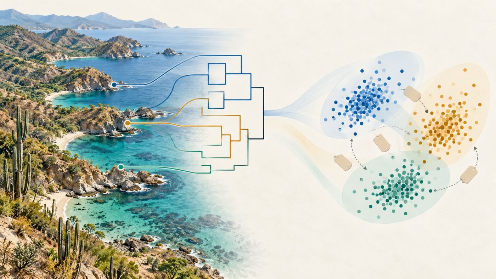
Taller 10. Clasificación y Pruebas de Hipótesis Multivariadas
Materiales requeridos para el taller en clase
En el siguiente enlace se puede descargar el archivo comprimido del taller, con las bases de datos de las bahías de Santa Marta, de la morfometría de peces, de las microalgas perifíticas y del mesozooplancton estuarino (📰 Taller 10. Clasificación y pruebas de hipótesis multivariadas).
Nota: una vez se descarguen los materiales, se requiere descomprimirlos antes de realizar cualquier procedimiento y seguir las orientaciones del docente para realizar los ejercicios requeridos.
Diapositivas en vivo - Slides.com

Los temas de profundización y el cuestionario de refuerzo, están en la guía complementaria y el Cuestionario de profundización al final del taller.
Objetivos del taller
Este taller acompaña la sesión del sábado 31 de octubre en la tarde (S12) y la presentación 10 («Clasificación y pruebas de hipótesis multivariadas»). Cierra el módulo multivariado: después de ordenar (Talleres 7 a 9), se buscan grupos, se asignan objetos a grupos conocidos y se prueba si los grupos difieren. Al terminar, se podrá:
- Construir un dendrograma con una distancia y un método de unión justificados, elegir el método con la correlación cofenética y cortarlo en k grupos con la silueta.
- Clasificar individuos en grupos conocidos con un análisis discriminante lineal (LDA), informar su desempeño con validación cruzada y leer el biplot canónico.
- Probar diferencias entre grupos con MANOVA o PERMANOVA según los supuestos y el tipo de datos, y separar localización de dispersión con
betadisper(). - Declarar en las permutaciones los bloques y las unidades de muestreo del diseño (
how(blocks = …),Plots()). - Documentar la sobredispersión de una comunidad (media–varianza, φ, residuos de Dunn-Smyth y AIC) y probar el efecto de un factor con un GLM multivariado de binomial negativa (
mvabund::manyglm()).
NotaBases de datos
- Bahías (
FQmarino.csv): siete variables fisicoquímicas medidas en siete bahías y playas de Santa Marta (Rodríguez-Barrios, 2023). Se usa en la Parte 1. - Peces (
datos.xlsx): razones morfométricas de cinco especies de la subfamilia Barbinae del sistema del río Ganges, India (Gupta et al., 2018). No es un caso del Caribe: se usa porque reúne lo que las pruebas multivariadas necesitan (grupos conocidos, tamaños desiguales y supuestos que fallan) y da continuidad al repositorio. Partes 2 y 3. - Microalgas (
Microalgas.xlsx): microalgas perifíticas en tres tributarios del río Gaira, Sierra Nevada de Santa Marta (Osorio Ávila et al., 2015). Parte 4. - Plancton (hoja
Riquezadeplancton.xlsx): mesozooplancton del estuario del golfo de Urabá, Caribe colombiano (Vargas-Ospina et al., 2025). Estudio de caso.
Código
# Librerías requeridas
library(tidyverse)
library(readxl)
library(kableExtra)
library(vegan)
library(cluster) # silueta
library(factoextra) # dendrogramas
library(ggrepel) # rótulos sin superposición
library(gplots) # mapas de calor con heatmap.2()
# MASS trae lda(); se llama con MASS:: para que su select() no tape al de dplyr
# Formato común de números y tablas: f1(), f2(), f3(), coma(), p_de() y tabla()
source("formato.R")
# Paletas del módulo
col_trib <- c(T1 = "#2C6FB7",
T2 = "#E3A33B",
T3 = "#3E9C8F")
col_zona <- c(Fluvial = "#A6761D",
Estuarina = "#66A61E",
Marina = "#1F78B4")
col_esp <- c("P. chola" = "#2C6FB7",
"P. conchonius" = "#E3A33B",
"P. sophore" = "#3E9C8F",
"P. ticto" = "#7B3294",
"S. sarana" = "#A6761D")
col_grp <- c("1" = "#2C6FB7",
"2" = "#E3A33B")
# F y valor p de un permutest() de betadisper
F_bd <- function(pt) pt$tab$F[1]
p_bd <- function(pt) pt$tab$`Pr(>F)`[1]Antes de empezar: buscar grupos, asignar a grupos o probar diferencias
Las técnicas de este taller responden tres preguntas distintas sobre grupos (presentación 10, diap. 5):
| CLA (análisis de clúster) | LDA (análisis discriminante) | MANOVA · PERMANOVA | |
|---|---|---|---|
| ¿Hay grupos a priori? | No: el dendrograma los propone | Sí: se conocen | Sí: son los niveles de un factor |
| Pregunta | ¿Qué objetos se parecen? | ¿Qué combinación de variables separa los grupos y a qué grupo va cada objeto? | ¿Difieren los centroides de los grupos? |
| Tipo de análisis | Descriptivo | Descriptivo y predictivo | Inferencial (valor p) |
| Ejemplo del taller | Bahías por su fisicoquímica | Especie de cada pez por su morfometría | Especies de peces; tributarios de microalgas |
| Función en R | hclust(), cutree() |
MASS::lda() |
manova(), adonis2() |
Las tres comparten la misma materia prima: una matriz de distancias (o, en la LDA y la MANOVA, la de covarianzas). Por eso la decisión que más pesa en todas es la misma de los Talleres 8 y 9: qué distancia y qué transformación. Euclídea sobre variables estandarizadas para variables físicas o químicas en unidades distintas; euclídea sobre las medidas si ya comparten escala; Bray-Curtis para abundancias.
Parte 1 — Análisis de clúster: ¿qué bahías de Santa Marta se parecen?
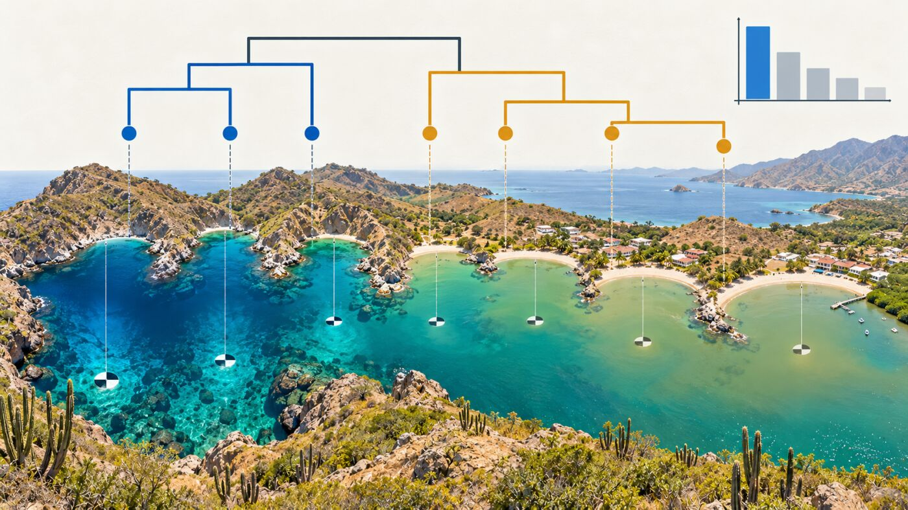
Pregunta: ¿Forman grupos las siete bahías por su fisicoquímica, y cuántos grupos sostienen los datos?
El análisis de clúster se organiza en cuatro pasos, cada uno con una decisión:
| Paso | Decisión | Herramienta |
|---|---|---|
| 1 · Distancia | Cómo se mide el parecido entre bahías | dist() sobre variables estandarizadas |
| 2 · Método de unión | Qué árbol respeta mejor esas distancias | hclust() y correlación cofenética |
| 3 · Número de grupos | Dónde se corta el árbol | Silueta media; 3.1 dendrograma final |
| 4 · Variables que separan los grupos | Qué variables explican la partición | Mapas de calor por bahía y por grupo |
Paso 1 · Distancia entre bahías
Código
# Siete bahías × siete variables fisicoquímicas
fq <- read.csv2("FQmarino.csv",
row.names = 1) # nombres de las bahías como filas
fq pH Cond Turbidez Temp Salinidad CapaFotica Oxigeno
Taganga 8.421 37.982 1.364 29.500 2.422 19.72 0.097
PtaBetin 8.490 38.073 0.545 29.545 2.431 22.10 0.147
Monohuaca 8.505 37.836 1.273 29.600 2.416 22.10 0.331
Granate 8.562 37.336 1.273 29.255 2.382 10.80 0.170
P.Grande 8.608 37.255 0.636 29.291 2.375 9.00 0.098
Rodadero 8.808 38.063 1.273 29.310 2.380 8.80 0.098
Aeropuerto 8.808 37.355 0.936 29.291 2.575 10.50 0.098Código
# Paso 1 · distancia euclídea sobre variables estandarizadas (z)
d_fq <- fq %>%
scale() %>% # media 0 y DE 1 por variable
dist()Las siete variables están en unidades distintas (pH, conductividad, turbidez, temperatura, salinidad, profundidad de la capa fótica y oxígeno), así que se estandarizan antes de calcular la distancia: sin scale(), la capa fótica, que varía de 8.8 a 22.1 m, dominaría el árbol solo por su escala.
NotaLas unidades de dos columnas
En FQmarino.csv, la salinidad vale cerca de 2.4 y el oxígeno cerca de 0.1, valores que no corresponden a las unidades habituales en agua de mar (≈ 36 UPS y varios mg/L). Al estandarizar, el CLA no depende de las unidades; pero las medias por grupo de esas dos columnas no se interpretan en valores absolutos.
Paso 2 · Método de unión y su ajuste
2.1 UPGMA frente a Ward
Código
# Dos métodos de unión sobre la misma distancia
cla_up <- hclust(d_fq,
method = "average") # UPGMA
cla_wa <- hclust(d_fq,
method = "ward.D2") # WardUPGMA une los grupos por la distancia promedio entre todos sus pares de objetos; Ward une los que menos aumentan la suma de cuadrados dentro de grupos, y tiende a dar grupos compactos y de tamaño parejo (diap. 7). En hclust(), Ward se pide como "ward.D2": la opción "ward.D" no eleva las distancias al cuadrado y no aplica el criterio de Ward tal como se define.
2.2 Ajuste: la correlación cofenética
La distancia cofenética entre dos bahías es la altura del nodo en que se unen en el dendrograma. La correlación entre esas distancias y las originales mide cuánto respeta el árbol la matriz de partida (diap. 8):
Código
# Correlación cofenética de los métodos de hclust()
metodos <- c(UPGMA = "average",
Ward = "ward.D2",
Completo = "complete",
Simple = "single",
WPGMA = "mcquitty",
UPGMC = "centroid",
WPGMC = "median")
cof <- map_dbl(metodos,
~ cor(d_fq, cophenetic(hclust(d_fq, method = .x)))) # r entre distancia original y del árbol
tibble(Método = names(metodos),
`method =` = unname(metodos),
`r cofenética` = unname(cof)) %>%
arrange(desc(`r cofenética`)) %>% # del mejor al peor ajuste
tabla()| Método | method = | r cofenética |
|---|---|---|
| UPGMA | average | 0.823 |
| WPGMA | mcquitty | 0.821 |
| Completo | complete | 0.811 |
| Ward | ward.D2 | 0.804 |
| Simple | single | 0.736 |
| WPGMC | median | 0.340 |
| UPGMC | centroid | 0.024 |
Código
# Distancia original frente a la cofenética, UPGMA y Ward
tibble(Original = c(d_fq, d_fq),
Cofenetica = c(cophenetic(cla_up), cophenetic(cla_wa)), # altura de unión de cada par
Metodo = rep(c(paste0("UPGMA (r = ", f2(cof["UPGMA"]), ")"),
paste0("Ward (r = ", f2(cof["Ward"]), ")")),
each = length(d_fq))) %>%
ggplot(aes(x = Original,
y = Cofenetica)) +
geom_point(color = "#2C6FB7",
size = 2) +
geom_smooth(method = "lm",
se = FALSE,
color = "grey45",
linewidth = 0.6) +
facet_wrap(~ Metodo,
scales = "free_y") +
labs(x = "Distancia euclídea (variables estandarizadas)",
y = "Distancia cofenética") +
theme_bw()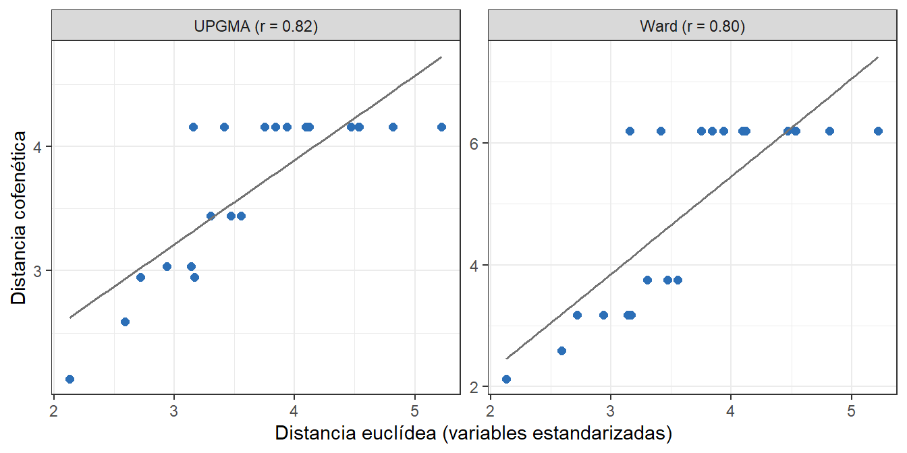
UPGMA (r = 0.823) y Ward (r = 0.804) superan el umbral habitual de 0.75 y casi empatan. Cuando la diferencia es tan pequeña, decide la lectura ecológica de los grupos; aquí los dos métodos dan los mismos grupos, así que se sigue con UPGMA. Los métodos de centroide ("centroid", "median") tienen correlaciones bajísimas (0.02 y 0.34) porque producen inversiones: un nodo que se une más abajo que el anterior, lo que hace el árbol ilegible.
Paso 3 · Número de grupos: la silueta
Código
# Silueta media del UPGMA para cada k posible (de 2 a n − 1 bahías)
k_rango <- 2:(nrow(fq) - 1)
sil_k <- map_dbl(k_rango,
~ mean(silhouette(cutree(cla_up, k = .x), d_fq)[, "sil_width"]))
names(sil_k) <- k_rango
k_opt <- as.integer(names(which.max(sil_k))) # k con la mayor silueta media
round(sil_k, 2) 2 3 4 5 6
0.28 0.21 0.14 0.12 0.08 Código
# Grupos con el k elegido y silueta de cada bahía
grp_fq <- cutree(cla_up,
k = k_opt) # corte del árbol en k grupos
sil_bah <- silhouette(grp_fq, d_fq)[, "sil_width"]La silueta de un objeto compara su distancia media a los de su grupo con la distancia media al grupo vecino más cercano; va de −1 (mal asignado) a 1 (bien separado). Valores medios por encima de 0.5 indican una estructura razonable; entre 0.26 y 0.50, débil. El k con la mayor silueta media es el número óptimo de grupos.
Código
# Silueta media por k, con el óptimo resaltado
tibble(k = k_rango,
Silueta = sil_k) %>%
ggplot(aes(x = k,
y = Silueta)) +
geom_hline(yintercept = c(0.26, 0.5), # límites de estructura débil y razonable
linetype = 3) +
geom_segment(aes(xend = k,
yend = 0),
colour = "grey50") + # barras finas, como type = "h"
geom_point(aes(colour = k == k_opt),
size = 3,
show.legend = FALSE) +
annotate("text",
x = k_opt + 0.12,
y = max(sil_k) + 0.02,
hjust = 0, # texto a la derecha del punto
label = paste("óptimo: k =", k_opt),
colour = "#C0392B",
fontface = "bold",
size = 3.5) +
scale_colour_manual(values = c(`TRUE` = "#C0392B",
`FALSE` = "grey40")) +
scale_x_continuous(breaks = k_rango) +
labs(x = "Número de grupos (k)",
y = "Silueta media") +
theme_bw() +
theme(panel.grid.minor = element_blank())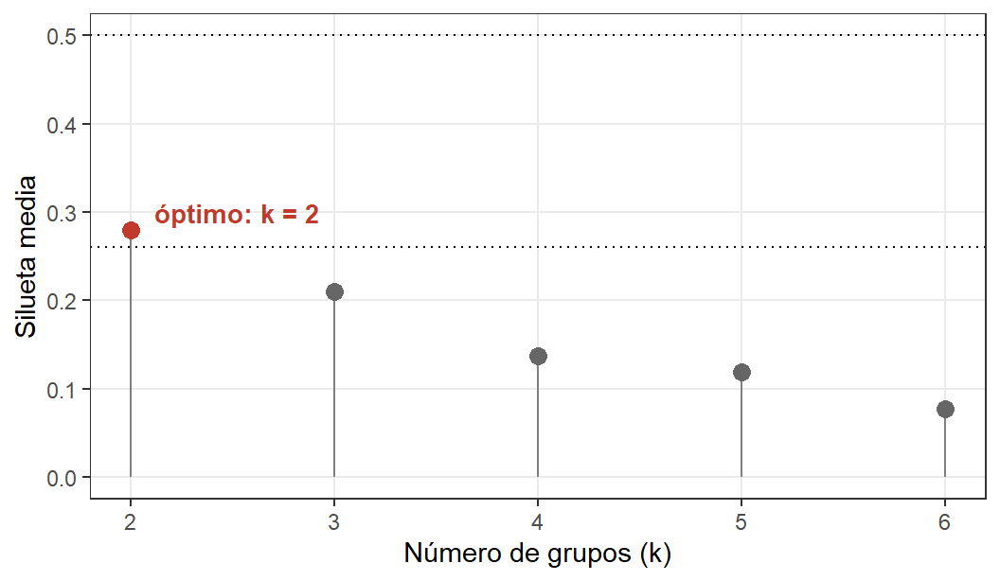
El máximo está en k = 2 (silueta media = 0.28): una estructura débil. Las 7 bahías tienen silueta positiva (de 0.22 a 0.34): ninguna queda mal asignada, pero ninguna está muy lejos del otro grupo. Los niveles de fusión, la otra forma de elegir k, están en el material complementario.
3.1 Dendrograma final
Código
# Dendrograma final con los grupos
fviz_dend(cla_up,
k = k_opt, # número de grupos
k_colors = unname(col_grp),
rect = TRUE, # rectángulo por grupo
rect_fill = TRUE,
cex = 0.8,
lower_rect = -1.6, # deja espacio a los nombres
labels_track_height = 1.6,
main = "",
ylab = "Distancia euclídea (z)")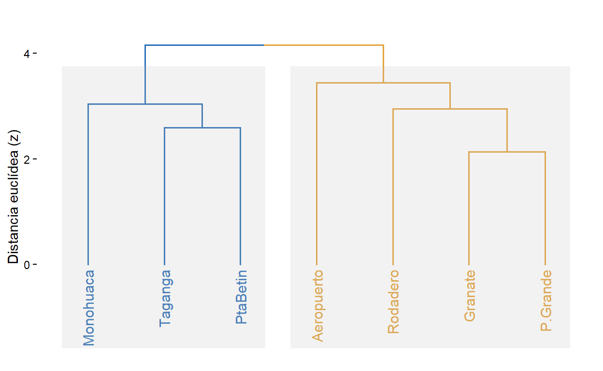
3.2 Los grupos del UPGMA en el plano del PCA
El dendrograma muestra cómo se unen las bahías, pero no dónde quedan en el espacio de las variables. fviz_cluster() dibuja los grupos del corte sobre los dos primeros ejes de un PCA de las variables estandarizadas, el mismo PCA de correlación del Taller 7.
Código
# Grupos del UPGMA sobre el PCA de las variables estandarizadas
fviz_cluster(list(data = fq,
cluster = grp_fq), # grupos del corte en k = 2
palette = unname(col_grp),
ellipse.type = "convex", # envolvente: con 3 y 4 bahías, no una elipse
repel = TRUE, # rótulos sin superposición
show.clust.cent = FALSE,
main = "",
ggtheme = theme_bw())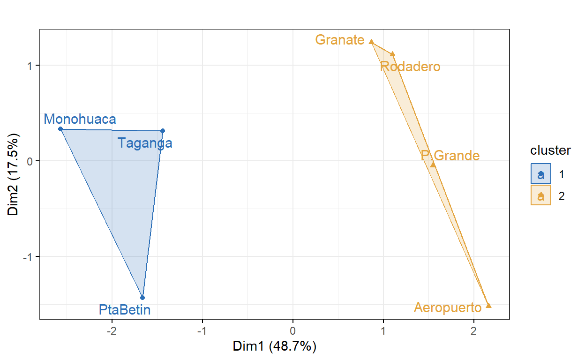
Los dos grupos ocupan lados opuestos del primer componente: Taganga, Punta Betín y Monohuaca a la izquierda, y las otras cuatro bahías a la derecha. La partición del árbol coincide con el gradiente principal de la fisicoquímica. Dos aclaraciones:
- Esta figura no es un k-means ni un agrupamiento no jerárquico.
fviz_cluster()solo dibuja una partición que ya existe (aquí, la del UPGMA). El k-means de las bahías, que llega a los mismos dos grupos, está en el material complementario (sección 3.1). - Con tan pocas bahías por grupo se usa la envolvente (
"convex"). Una elipse de confianza ("confidence") se calcula para la media del grupo; con 3 o 4 puntos sale casi plana o deja bahías por fuera.
Paso 4 · Variables que separan los grupos: mapas de calor
Un mapa de calor colorea cada valor de la matriz y ordena filas y columnas por sus dendrogramas. Para ver qué variables separan los grupos del CLA, el color debe expresar cuánto se aleja cada bahía de la media de cada variable, en desviaciones estándar (z por variable, scale = "column"), con el mismo dendrograma de bahías del Paso 2.
Código
# Dendrograma de las variables con la misma distancia y el mismo método
cla_var <- hclust(dist(t(scale(fq))),
method = "average")
# Mismo rango de color para los dos mapas
lim_z <- ceiling(max(abs(scale(fq))))
cortes <- seq(-lim_z, lim_z,
length.out = 101)Código
# Opción 1 · mapa de calor por bahías
heatmap.2(as.matrix(fq),
scale = "column", # z por variable (no por bahía)
Rowv = as.dendrogram(cla_up), # bahías: el UPGMA del Paso 2
Colv = as.dendrogram(cla_var), # variables: su propio UPGMA
col = bluered(100),
breaks = cortes,
trace = "none",
density.info = "none",
key.title = NA,
key.xlab = "z por variable",
margins = c(8, 9),
xlab = "Variables fisicoquímicas",
ylab = "Bahías")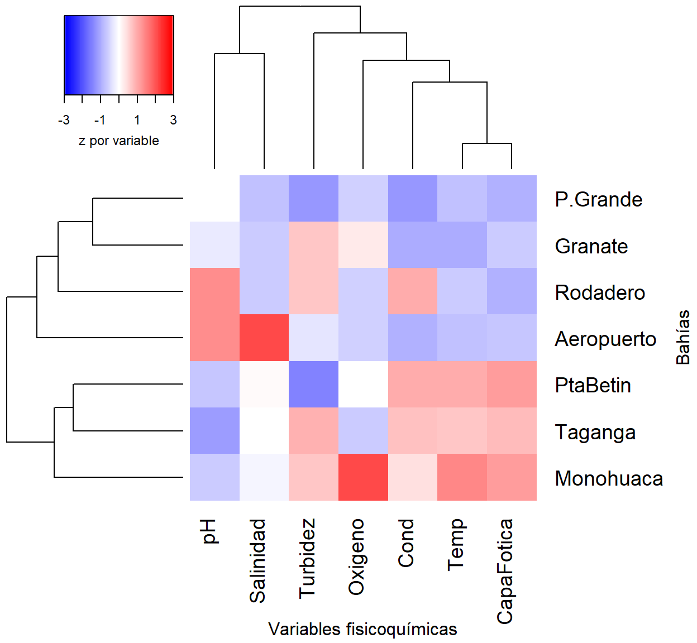
Para comparar los grupos, se promedia el z de las bahías de cada grupo: el valor dice cuántas desviaciones estándar se aleja el grupo de la media general en cada variable.
Código
# Media de z por grupo del CLA
z_grp <- scale(fq) %>%
as_tibble() %>%
mutate(Grupo = paste("Grupo", grp_fq)) %>%
group_by(Grupo) %>%
summarise(across(everything(), mean)) %>%
column_to_rownames("Grupo") %>%
as.matrix()
round(z_grp, 2) pH Cond Turbidez Temp Salinidad CapaFotica Oxigeno
Grupo 1 -0.84 0.71 0.05 1.04 -0.04 1.05 0.50
Grupo 2 0.63 -0.54 -0.04 -0.78 0.03 -0.79 -0.38Código
# Opción 2 · mapa de calor por grupos de bahías
heatmap.2(z_grp,
scale = "none", # ya es una media de z
Rowv = as.dendrogram(hclust(dist(z_grp),
method = "average")), # árbol de los dos grupos
Colv = as.dendrogram(cla_var),
dendrogram = "both",
col = bluered(100),
breaks = cortes,
cellnote = round(z_grp, 1), # valor en cada celda
notecol = "black",
trace = "none",
density.info = "none",
key.title = NA,
key.xlab = "Media de z",
lhei = c(1.5, 2.5), # altura de la llave y del mapa
cexRow = 1.2, # tamaño de los rótulos de fila
margins = c(8, 9),
xlab = "Variables fisicoquímicas",
ylab = NULL)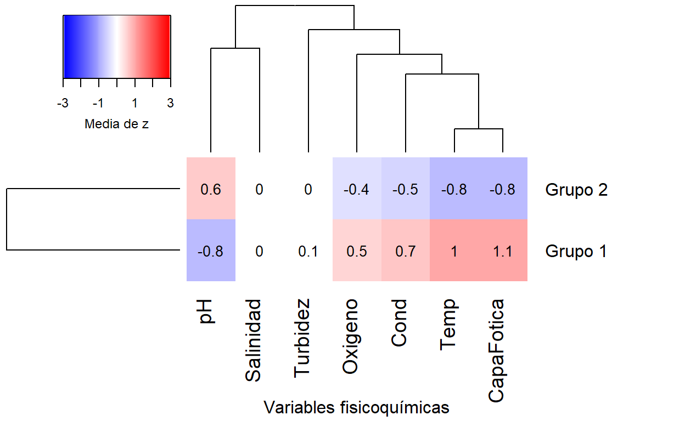
ImportanteCómo leer los colores: el azul pesa igual que el rojo
Con scale = "column", el color indica hacia dónde se aleja cada bahía o grupo de la media de esa variable: rojo intenso, muy por encima (z ≈ +1 a +3); azul intenso, muy por debajo (z ≈ −1 a −3); blanco, cerca de la media. Un azul intenso caracteriza tanto como un rojo intenso, por valores bajos en vez de altos.
La importancia de una variable para la partición se lee por columnas: una variable separa los grupos cuando su columna cambia de color entre ellos (rojo en uno y azul en el otro), y su peso es la distancia entre los dos valores.
Código
# Aporte de cada variable a la partición: diferencia de la media de z entre los grupos
tibble(Variable = colnames(z_grp),
Grupo_1 = z_grp["Grupo 1", ],
Grupo_2 = z_grp["Grupo 2", ],
Diferencia = abs(z_grp["Grupo 1", ] - z_grp["Grupo 2", ])) %>% # en desviaciones estándar
arrange(desc(Diferencia)) %>%
tabla(digits = c(0, 2, 2, 2),
col.names = c("Variable", "Grupo 1 (z)", "Grupo 2 (z)", "Diferencia (DE)"))| Variable | Grupo 1 (z) | Grupo 2 (z) | Diferencia (DE) |
|---|---|---|---|
| CapaFotica | 1.05 | -0.79 | 1.84 |
| Temp | 1.04 | -0.78 | 1.82 |
| pH | -0.84 | 0.63 | 1.46 |
| Cond | 0.71 | -0.54 | 1.25 |
| Oxigeno | 0.50 | -0.38 | 0.88 |
| Turbidez | 0.05 | -0.04 | 0.09 |
| Salinidad | -0.04 | 0.03 | 0.07 |
La capa fótica y la temperatura separan más los grupos (cerca de 1.8 desviaciones estándar), y la salinidad y la turbidez casi nada: su columna es blanca en los dos. El pH ilustra el riesgo de mirar solo el rojo: es la tercera variable que más separa, pero en el grupo 1 aparece en azul (pH más bajo). En el mapa por bahías ocurre lo mismo: el azul de la turbidez en Punta Betín (agua muy clara) la caracteriza tanto como el rojo del oxígeno en Monohuaca o el de la salinidad en Aeropuerto.
Con scale = "row" (talleres anteriores) la regla de «solo el rojo» tenía sentido, porque el azul marcaba las variables de números pequeños, un efecto de la escala. Con z por variable, las dos puntas de la paleta informan.
Código
# ¿Qué distingue a los dos grupos? Medias de las variables originales
med_grp <- fq %>%
mutate(Grupo = factor(grp_fq)) %>% # agrega el grupo del CLA
group_by(Grupo) %>%
summarise(n = n(),
across(pH:Oxigeno, mean))
med_grp %>%
tabla(digits = c(0, 0, 2, 2, 2, 2, 3, 1, 3))| Grupo | n | pH | Cond | Turbidez | Temp | Salinidad | CapaFotica | Oxigeno |
|---|---|---|---|---|---|---|---|---|
| 1 | 3 | 8.47 | 37.96 | 1.06 | 29.55 | 2.423 | 21.3 | 0.192 |
| 2 | 4 | 8.70 | 37.50 | 1.03 | 29.29 | 2.428 | 9.8 | 0.116 |
El grupo 1 (Taganga, PtaBetin, Monohuaca) tiene la capa fótica más profunda (21.3 frente a 9.8 m), algo más de temperatura y menor pH que el grupo 2 (Granate, P.Grande, Rodadero, Aeropuerto); la turbidez y la salinidad casi no difieren. La separación la lleva sobre todo la penetración de la luz: aguas más claras al norte (Taganga a Monohuaca) frente al resto. Con siete bahías y una silueta débil, es una hipótesis para un muestreo con réplicas, no un resultado.
AdvertenciaPor qué
scale = "column" y no scale = "row"
Con scale = "row", heatmap() y heatmap.2() estandarizan cada bahía a lo largo de sus siete variables. Como las variables están en unidades distintas, las de números grandes quedan en rojo en todas las bahías: la conductividad (media 37.7) y la temperatura (29.4) parecen «las que más aportan» aunque no separen los grupos.
Código
# Media por grupo con z por bahía (scale = "row") frente a z por variable (scale = "column")
z_fila <- t(scale(t(as.matrix(fq)))) # cada bahía estandarizada en sus variables
list(scale_row = round(apply(z_fila, 2, tapply, grp_fq, mean), 2),
scale_column = round(z_grp, 2))$scale_row
pH Cond Turbidez Temp Salinidad CapaFotica Oxigeno
1 -0.39 1.55 -0.88 0.99 -0.79 0.45 -0.93
2 -0.27 1.68 -0.79 1.12 -0.69 -0.20 -0.85
$scale_column
pH Cond Turbidez Temp Salinidad CapaFotica Oxigeno
Grupo 1 -0.84 0.71 0.05 1.04 -0.04 1.05 0.50
Grupo 2 0.63 -0.54 -0.04 -0.78 0.03 -0.79 -0.38Con scale = "row", los dos grupos quedan casi iguales (conductividad 1.55 y 1.68). Con scale = "column" aparece lo que separa los grupos: pH, temperatura y capa fótica. Para variables en unidades distintas, se estandariza por variable.
AdvertenciaDiseño: un grupo del CLA no se prueba después con los mismos datos
Es tentador correr una PERMANOVA para «confirmar» que los dos grupos del dendrograma difieren:
Código
# Prueba circular: los grupos salieron de las mismas distancias
set.seed(2026)
circular <- adonis2(d_fq ~ factor(grp_fq),
permutations = 999)
c(R2 = circular$R2[1],
p = p_de(circular)) R2 p
0.4573934 0.0310000 Da R² = 0.46 y p = 0.031, pero el resultado es circular: el clúster eligió precisamente la partición que más separa a las bahías, y la prueba compara esa partición con particiones al azar. Un grupo hallado con CLA es una hipótesis; se prueba con datos nuevos o con un factor definido antes de mirar los datos (diap. 5).
Para discutir: si se agregaran 20 estaciones de pastos marinos del Parque Tayrona con su fauna asociada, ¿qué distancia se usaría para el CLA y qué cambiaría en la lectura de la silueta?
Parte 2 — Análisis discriminante: ¿la morfometría identifica la especie de cada pez?
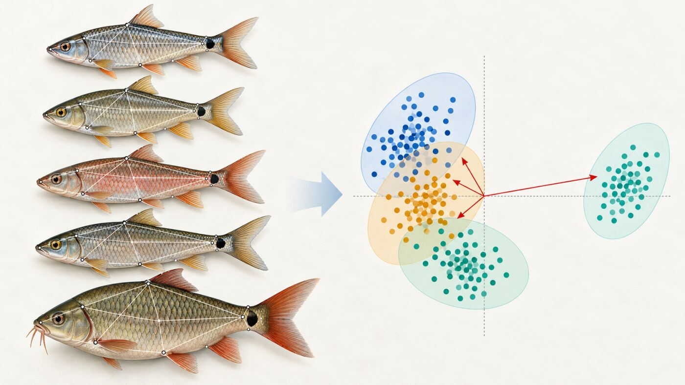
Pregunta: ¿Qué tan bien asignan las 10 razones morfométricas cada pez a su especie, y qué medidas separan a las especies?
La LDA sigue tres pasos: (1) ajustar las funciones discriminantes y ver las probabilidades a priori; (2) medir el acierto de la clasificación, con resustitución y con validación cruzada; y (3) representar el discriminante canónico, con los peces y las medidas en el plano de las dos primeras funciones.
Los datos, por nombre
Código
# Morfometría de peces: la columna 1 es un índice y «Grupo» es el código numérico de la especie
peces <- read_xlsx("datos.xlsx",
.name_repair = "unique_quiet") %>%
rename(Indice = 1) %>% # primera columna sin nombre
mutate(Especie = factor(recode(Especie, "P. conchonious" = "P. conchonius"))) # corrige el nombre
# Las 10 medidas del análisis, por nombre (nunca por posición)
vars_p <- c("M.1", "M.2", "M.3", "M.4", "M.5",
"M.6", "M.7", "M.13", "M.15", "M.18")
peces10 <- peces %>%
select(all_of(vars_p))
count(peces, Especie, Grupo)# A tibble: 5 × 3
Especie Grupo n
<fct> <dbl> <int>
1 P. chola 1 12
2 P. conchonius 2 8
3 P. sophore 4 6
4 P. ticto 5 20
5 S. sarana 3 24Los 70 peces se reparten en 5 especies muy desiguales (de 6 a 24 individuos). La base trae 29 columnas «M.»: las morfométricas son razones de cada medida sobre la longitud estándar o la longitud de la cabeza (Gupta et al., 2018), es decir, ya son adimensionales y comparten escala. Dos cuidados: el nombre P. conchonius viene mal escrito en la base («conchonious») y se corrige al leer; y la columna Grupo es un código de especie, no una medida, así que si las variables se tomaran por posición (peces[, 3:12]), ese código entraría al análisis como si fuera una variable morfométrica.
Paso 1 · LDA y probabilidades a priori
Código
# Análisis discriminante lineal (resustitución)
lda_p <- MASS::lda(peces10,
grouping = peces$Especie) # grupos conocidos
round(lda_p$prior, 2) # probabilidades a priori P. chola P. conchonius P. sophore P. ticto S. sarana
0.17 0.11 0.09 0.29 0.34 Código
# Porcentaje de la separación entre grupos que resume cada función discriminante
pct_ld <- 100 * lda_p$svd^2 / sum(lda_p$svd^2)
names(pct_ld) <- colnames(lda_p$scaling)
round(pct_ld, 1) LD1 LD2 LD3 LD4
81.8 12.0 5.6 0.6 La LDA busca combinaciones lineales de las medidas (las funciones discriminantes) que maximicen la varianza entre grupos frente a la de dentro de grupos. Con 5 grupos hay hasta 4 funciones; aquí LD1 resume el 81.8 % de la separación y LD2 el 12.0 %. Las probabilidades a priori siguen el tamaño de los grupos: un pez dudoso tiende a ir a S. sarana (0.34) antes que a P. sophore (0.09).
Paso 2 · Resustitución frente a validación cruzada
Código
# Clasificación con los mismos datos (resustitución) y dejando uno fuera (CV = TRUE)
pred_res <- predict(lda_p)$class
cv_p <- MASS::lda(peces10,
grouping = peces$Especie,
CV = TRUE) # validación cruzada dejando uno fuera
# Porcentaje de acierto por especie con cada método
acierto <- tibble(Especie = levels(peces$Especie),
n = as.vector(table(peces$Especie)),
Resustitucion = 100 * diag(prop.table(table(peces$Especie, pred_res), 1)),
Validacion_cruzada = 100 * diag(prop.table(table(peces$Especie, cv_p$class), 1)))
acc_res <- 100 * mean(pred_res == peces$Especie) # acierto global
acc_cv <- 100 * mean(cv_p$class == peces$Especie)
acierto %>%
tabla(digits = 0,
col.names = c("Especie", "n", "% correcto (resustitución)", "% correcto (validación cruzada)"))| Especie | n | % correcto (resustitución) | % correcto (validación cruzada) |
|---|---|---|---|
| P. chola | 12 | 100 | 83 |
| P. conchonius | 8 | 100 | 88 |
| P. sophore | 6 | 67 | 33 |
| P. ticto | 20 | 100 | 100 |
| S. sarana | 24 | 100 | 100 |
Código
# Tabla de confusión con validación cruzada (filas: especie real; columnas: asignada)
conf_cv <- table(Real = peces$Especie,
Asignada = cv_p$class)
conf_cv Asignada
Real P. chola P. conchonius P. sophore P. ticto S. sarana
P. chola 10 0 2 0 0
P. conchonius 0 7 0 1 0
P. sophore 4 0 2 0 0
P. ticto 0 0 0 20 0
S. sarana 0 0 0 0 24Con resustitución, la LDA clasifica bien el 97.1 % de los peces; con validación cruzada (cada pez se clasifica con una LDA ajustada sin él), el 90.0 %. La resustitución es optimista porque cada pez ayudó a construir la regla que lo clasifica. La caída se concentra en P. sophore, la especie más pequeña (n = 6): pasa de 66.7 % a 33.3 %, y 4 de sus 6 peces se asignan a P. chola. S. sarana y P. ticto se clasifican sin error con cualquiera de los dos métodos.
Paso 3 · El discriminante canónico
3.1 El biplot canónico (dos ejes)
En el espacio de las funciones discriminantes (el discriminante canónico), cada pez es un punto y cada medida una flecha. Las flechas son los coeficientes de estructura: la correlación de cada medida con LD1 y LD2. Se leen mejor que los coeficientes de lda_p$scaling, que cambian de signo y tamaño cuando las medidas están correlacionadas.
Código
# Coordenadas de los peces en LD1 y LD2
sc_ld <- predict(lda_p)$x[, 1:2] %>%
as_tibble() %>%
mutate(Especie = peces$Especie)
# Correlaciones de estructura: cada medida con LD1 y LD2
est_ld <- cor(peces10, predict(lda_p)$x[, 1:2]) %>%
as_tibble(rownames = "Medida")
est_ld %>%
arrange(desc(abs(LD1))) %>% # las más ligadas a LD1 primero
head(4)# A tibble: 4 × 3
Medida LD1 LD2
<chr> <dbl> <dbl>
1 M.1 0.890 -0.259
2 M.7 0.880 -0.359
3 M.18 -0.792 0.00503
4 M.13 0.750 0.423 Código
# Factor para llevar las flechas a la escala de los peces
mult <- 0.9 * max(abs(c(sc_ld$LD1, sc_ld$LD2)))
# Biplot canónico en ggplot2
ggplot(sc_ld,
aes(x = LD1,
y = LD2)) +
geom_hline(yintercept = 0,
linetype = 3) +
geom_vline(xintercept = 0,
linetype = 3) +
stat_ellipse(aes(color = Especie),
level = 0.95, # elipse del 95 % por especie
show.legend = FALSE) +
geom_point(aes(color = Especie),
size = 2,
alpha = 0.8) +
geom_segment(data = est_ld,
aes(x = 0, y = 0,
xend = LD1 * mult,
yend = LD2 * mult), # flechas de las medidas
arrow = arrow(length = unit(0.2, "cm")),
color = "#C0392B") +
geom_text_repel(data = est_ld,
aes(x = LD1 * mult,
y = LD2 * mult,
label = Medida),
color = "#C0392B",
size = 3.3) +
scale_color_manual(values = col_esp) +
labs(x = paste0("LD1 (", f1(pct_ld[1]), " %)"),
y = paste0("LD2 (", f1(pct_ld[2]), " %)")) +
theme_bw() +
theme(legend.text = element_text(face = "italic"))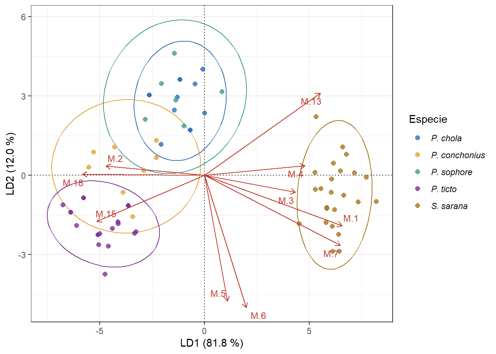
S. sarana, de otro género, se separa sola sobre LD1; las cuatro Puntius quedan del otro lado, y P. chola y P. sophore se solapan, como anticipaba la tabla de confusión. M.1 y M.7 (r = 0.89 y 0.88 con LD1) apuntan hacia S. sarana; M.18 y M.15 (-0.79 y -0.70) hacia el lado opuesto. LD2 separa a P. chola y P. sophore (arriba) de P. ticto (abajo), y M.5 y M.6 apuntan hacia P. ticto.
3.2 El discriminante canónico en un eje con candisc
Cuando la primera función concentra casi toda la separación, o cuando solo hay dos grupos y por tanto una sola función, la figura más clara es la de un eje: a la izquierda, la puntuación canónica de cada individuo por grupo; a la derecha, la estructura (la correlación de cada medida con ese eje). El paquete candisc la produce a partir del modelo lineal multivariado de las medidas.
Código
# Discriminante canónico (CDA) con candisc
library(candisc) # install.packages("candisc")
# Modelo lineal multivariado: las 10 medidas en función de la especie
mod_p <- lm(as.matrix(peces10) ~ Especie,
data = peces)
can_p <- candisc(mod_p,
term = "Especie",
ndim = 1) # un solo eje canónico
# % de la separación entre especies de cada eje canónico
round(head(can_p$pct, nlevels(peces$Especie) - 1), 1)[1] 81.8 12.0 5.6 0.6Código
# Estructura: correlación de cada medida con Can1
round(can_p$structure, 2) Can1
M.1 0.89
M.2 -0.64
M.3 0.59
M.4 0.65
M.5 0.15
M.6 0.27
M.7 0.88
M.13 0.75
M.15 -0.70
M.18 -0.79Código
# Puntuación canónica y estructura en un eje
plot(can_p,
titles.1d = c("Puntuación canónica", "Estructura"))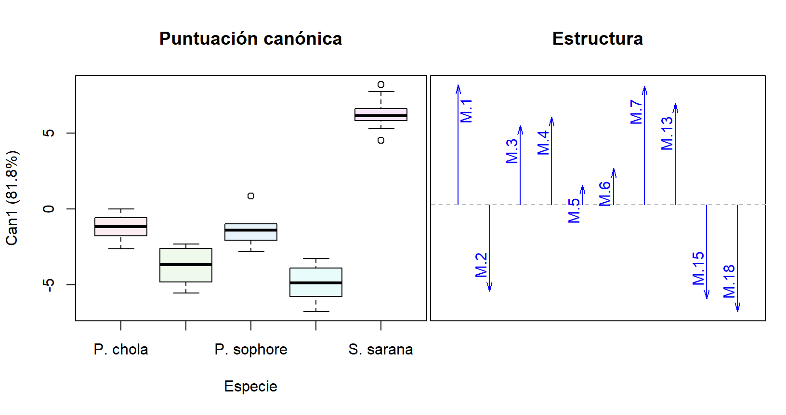
Can1 es la misma LD1 de la MASS::lda() (81.8 % de la separación) y su estructura es la misma correlación de las flechas del biplot (M.1: 0.89). La figura se lee de izquierda a derecha: S. sarana queda sola arriba y las medidas con flechas hacia arriba (M.1, M.7, M.13) son mayores en ella; las que apuntan hacia abajo (M.18, M.15, M.2) son mayores en las Puntius, sobre todo en P. ticto. Lo que la figura no resuelve es el solapamiento de P. chola y P. sophore, que tampoco separa el segundo eje del biplot. Una aplicación publicada de esta figura, con nutrientes foliares de plantas de banano y la severidad de la sigatoka negra en el Magdalena, está en Aguirre et al. (2015, figura 2).
TipCon dos grupos, una sola función
Con dos grupos hay exactamente una función canónica, y esta figura es el resumen completo del discriminante. La prueba que acompaña al CDA es entonces la misma T² de Hotelling de la Parte 3: el recuadro de lectura en casa «Pocos individuos, muchas variables» la corre con P. chola y P. sophore.
NotaOjo con la sigla DCA
En este taller, «análisis discriminante canónico» es la versión gráfica de la LDA (CDA en inglés). En el Taller 8, DCA fue el Detrended Correspondence Analysis (decorana()). El microdiseño usa la sigla DCA sin aclarar cuál de los dos (diap. 12).
Para discutir: si se quisiera distinguir juveniles de langosta espinosa de refugios artificiales y naturales con 4 medidas, ¿cuántos individuos por grupo harían falta como mínimo para que la validación cruzada fuera creíble? ¿Qué pasaría si un grupo tuviera 6?
Parte 3 — ¿Difieren las especies? MANOVA, PERMANOVA y betadisper
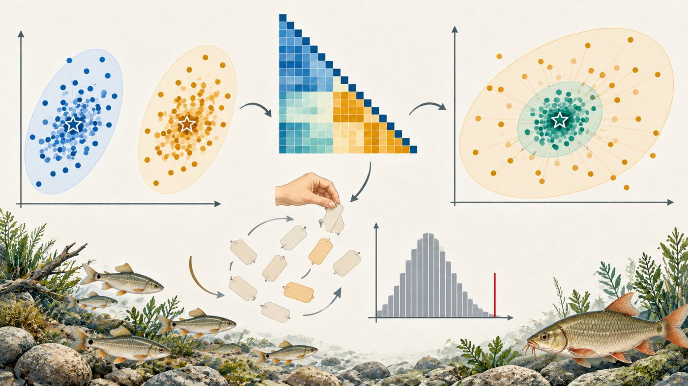
Pregunta: ¿Difieren las cinco especies en su morfometría, y la diferencia es de posición (centroide) o de dispersión?
La Parte 3 sigue cinco pasos: (1) MANOVA; (2) sus supuestos; (3) PERMANOVA, la alternativa por permutaciones; (4) betadisper, para separar localización de dispersión; y (5) comparaciones pareadas. Los recuadros de lectura en casa (T² de Hotelling y la pseudo-F a mano) se pueden saltar en clase.
Una lógica, tres respuestas
La partición es la misma que en el GLM de la Semana 2: variación entre grupos frente a variación dentro de grupos (diap. 14). Cambia la respuesta:
| GLM gaussiano (Semana 2) | MANOVA | PERMANOVA | |
|---|---|---|---|
| Respuesta | Una medida (M.1) |
Varias medidas a la vez (matriz n × p) | Una matriz de distancias (n × n) |
| Se particiona | Devianza (suma de cuadrados) | Matrices de sumas de cuadrados y productos cruzados: H (entre) y E (dentro) | Distancias al cuadrado |
| Valor p | Distribución F | F aproximada (Pillai, Wilks…) | Permutaciones |
| Supone | Normalidad, varianzas iguales | Normalidad multivariada, covarianzas iguales | Dispersión parecida entre grupos |
Paso 1 · MANOVA
Código
# MANOVA de las 10 medidas por especie
manova_p <- manova(as.matrix(peces10) ~ Especie, # respuesta: matriz n × p
data = peces)
pillai <- summary(manova_p, test = "Pillai")$stats # el más robusto
wilks <- summary(manova_p, test = "Wilks")$stats
pillai Df Pillai approx F num Df den Df Pr(>F)
Especie 4 2.513016 9.971055 40 236 2.759124e-32
Residuals 65 NA NA NA NA NACódigo
wilks Df Wilks approx F num Df den Df Pr(>F)
Especie 4 0.002891203 19.66735 40 214.2008 3.401656e-52
Residuals 65 NA NA NA NA NALa traza de Pillai va de 0 a min(p, g − 1) = 4; el valor observado, 2.513 (F = 9.97 con 40 y 236 gl; p < 0.001), está lejos de cero. La lambda de Wilks (Λ = |E| / |H + E|) va de 0 a 1 y vale 0.003: casi toda la variación es entre especies. Pillai es el estadístico más robusto cuando los grupos son desiguales y los supuestos se cumplen a medias, así que es el que se reporta (diap. 15). Los otros dos estadísticos (Hotelling-Lawley y Roy) están en el material complementario, sección 8.
Paso 2 · Supuestos de la MANOVA
Código
# Normalidad multivariada de los residuos: Shapiro-Wilk sobre la proyección
# en la dirección del residuo más alejado (misma lógica que mvnormtest::mshapiro.test)
shapiro_mv <- function(X) {
R <- t(scale(X, scale = FALSE)) # residuos centrados
M1 <- solve(R %*% t(R), tol = 1e-18)
C <- M1 %*% R[, which.max(diag(t(R) %*% M1 %*% R))] # dirección del más alejado
shapiro.test(drop(t(C) %*% t(X))) # prueba univariada sobre la proyección
}
shap_mv <- shapiro_mv(residuals(manova_p))
c(W = unname(shap_mv$statistic),
p = shap_mv$p.value) W p
8.389305e-01 3.042501e-07 Código
# QQ de Mahalanobis de los residuos
res_m <- residuals(manova_p)
tibble(Observada = sort(mahalanobis(res_m, colMeans(res_m), cov(res_m))), # distancia de cada residuo
Teorica = qchisq(ppoints(nrow(res_m)), df = ncol(res_m))) %>% # cuantiles esperados
ggplot(aes(x = Teorica,
y = Observada)) +
geom_abline(intercept = 0,
slope = 1,
color = "#C0392B") +
geom_point(color = "#2C6FB7") +
labs(x = "Cuantil chi-cuadrado (10 gl)",
y = "Mahalanobis² de los residuos") +
theme_bw()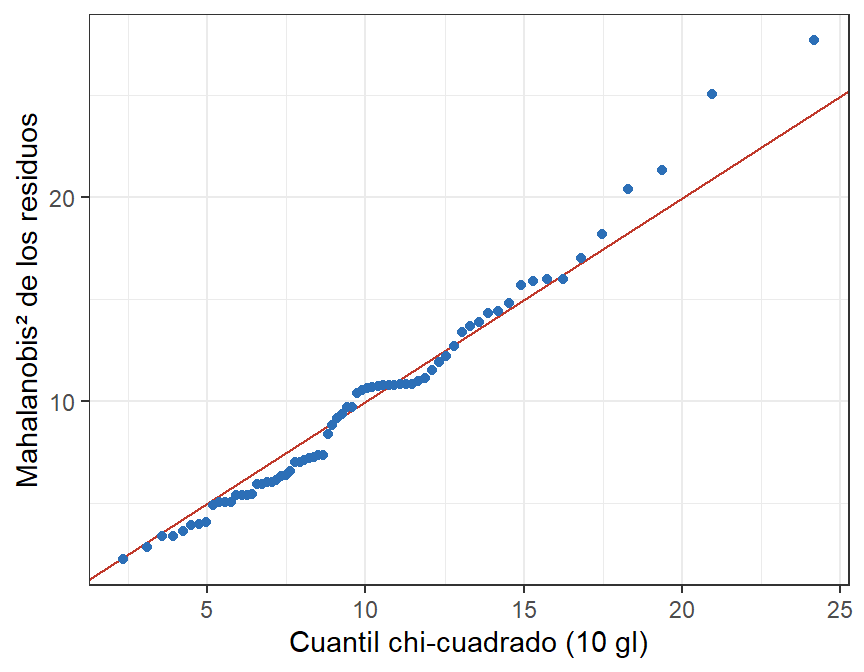
Código
# ¿Son invertibles las matrices de covarianza de cada especie? (rango frente a p = 10)
rango_S <- peces %>%
group_by(Especie) %>%
summarise(n = n(),
Rango = qr(cov(pick(all_of(vars_p))))$rank) %>% # rango de la matriz de covarianzas
mutate(Invertible = if_else(Rango == length(vars_p), "Sí", "No")) # invertible si rango = 10
rango_S# A tibble: 5 × 4
Especie n Rango Invertible
<fct> <int> <int> <chr>
1 P. chola 12 8 No
2 P. conchonius 8 7 No
3 P. sophore 6 5 No
4 P. ticto 20 10 Sí
5 S. sarana 24 10 Sí Código
# M de Box: compara las matrices de covarianza de los grupos
box_m <- function(X, g) {
X <- as.matrix(X)
g <- factor(g)
p <- ncol(X) # variables
k <- nlevels(g) # grupos
n <- as.vector(table(g))
N <- sum(n)
S_g <- lapply(levels(g),
function(l) cov(X[g == l, , drop = FALSE])) # covarianzas por grupo
S_p <- Reduce(`+`, Map(function(S, ni) (ni - 1) * S, S_g, n)) / (N - k) # covarianza combinada
M <- (N - k) * log(det(S_p)) - sum((n - 1) * map_dbl(S_g, ~ log(det(.x))))
c1 <- (sum(1 / (n - 1)) - 1 / (N - k)) *
(2 * p^2 + 3 * p - 1) / (6 * (p + 1) * (k - 1)) # corrección de Box
gl <- p * (p + 1) * (k - 1) / 2
chi <- M * (1 - c1)
c(chi2 = chi,
gl = gl,
p = pchisq(chi, gl, lower.tail = FALSE))
}
# M de Box sobre los 4 primeros ejes de un PCA de correlación
pca_p <- prcomp(peces10,
scale. = TRUE) # PCA de correlación
pct_pca <- 100 * sum(pca_p$sdev[1:4]^2) / sum(pca_p$sdev^2) # % de varianza de los 4 ejes
box_pca <- box_m(pca_p$x[, 1:4],
peces$Especie)
box_pca chi2 gl p
7.344891e+01 4.000000e+01 9.881708e-04 | Supuesto | Diagnóstico | Resultado |
|---|---|---|
| Normalidad multivariada | Shapiro-Wilk de los residuos y QQ de Mahalanobis | W = 0.839; p < 0.001; la cola superior se aleja de la recta |
| Covarianzas homogéneas | M de Box | No calculable con las 10 medidas: 3 especies con matriz singular |
| M de Box con 4 ejes de PCA (85.3 % de la varianza) | χ² = 73.4; gl = 40; p = 0.001 | |
| Independencia | Diseño de muestreo y revisión de la base | Un pez = una unidad, si cada pez viene de una captura distinta; se diagnostica con las preguntas del recuadro siguiente, no con Durbin-Watson |
P. chola, P. conchonius y P. sophore tienen menos individuos que medidas (o casi): con n − 1 < p, su matriz de covarianzas no se puede invertir y la M de Box no existe. Con cuatro ejes de PCA sí se calcula, y rechaza la homogeneidad. Los dos supuestos fallan: la diferencia entre especies es enorme (Wilks ≈ 0.003), pero la MANOVA queda como apoyo descriptivo (diap. 16–17).
AdvertenciaDiseño: independencia y seudorreplicación, ¿cómo se diagnostican?
La independencia es el supuesto que más pesa: si se viola, los valores p son demasiado pequeños aunque la normalidad y las covarianzas se cumplan. Se viola cuando varias filas de la base no son réplicas independientes del factor que se prueba (seudorreplicación; Hurlbert, 1984): peces del mismo lance o cardumen, sustratos de la misma visita, muestras de la misma estación.
Problemas con Durbin-Watson. La prueba mide la correlación entre residuos consecutivos en el orden de las filas. Podría aplicarse como lm(M.1 + … + M.18 ~ Especie), que además suma las 10 medidas en una sola variable. Con los mismos peces y el mismo modelo, basta reordenar la base:
Código
# La suma de las 10 medidas, como en lm(M.1 + ... + M.18 ~ Especie)
peces_dw <- peces %>%
mutate(Suma = rowSums(across(all_of(vars_p))))
# Durbin-Watson con el orden de la base y con los peces ordenados por su suma dentro de cada especie
set.seed(2026)
dw_base <- car::durbinWatsonTest(lm(Suma ~ Especie,
data = peces_dw))
set.seed(2026)
dw_orden <- car::durbinWatsonTest(lm(Suma ~ Especie,
data = arrange(peces_dw, Especie, Suma))) # mismos peces, otro orden
rbind(orden_de_la_base = c(DW = dw_base$dw, p = dw_base$p),
otro_orden = c(DW = dw_orden$dw, p = dw_orden$p)) DW p
orden_de_la_base 1.8042501 0.198
otro_orden 0.8126779 0.000El mismo conjunto de peces «cumple» la independencia (DW = 1.80; p = 0.198) o la «viola» (DW = 0.81; p < 0.001) según cómo se digitaron las filas. Durbin-Watson sirve cuando las filas tienen un orden real (una serie de tiempo, un transecto), y entonces se ordenan por esa variable antes de probar. En una base sin orden no informa nada sobre la independencia.
Qué se diagnostica en su lugar. Cuatro preguntas, antes de correr cualquier prueba:
- ¿Cuál es la unidad de muestreo? Si los peces vienen de pocos lances o sitios, la réplica es el lance, no el pez. Los métodos de Gupta et al. (2018) deberían decir de cuántas capturas salen los 70 peces.
- ¿Hay filas repetidas? Una fila copiada es la seudorreplicación más simple:
Código
# Peces con las 10 medidas idénticas a las de otro pez
peces$Indice[duplicated(peces10) | duplicated(peces10, fromLast = TRUE)] [1] 1 2 3 10 11 12 51 52 57 58 61 64 65 67 68- ¿Hay una variable que agrupe u ordene las muestras (lance, estación, visita, fecha, profundidad)? Si existe, el diagnóstico se hace con ella: residuos por unidad, o Durbin-Watson y autocorrelación con las filas ordenadas por la fecha o la distancia.
- ¿El factor se asignó a la unidad o varía dentro de ella? Si varía dentro, la unidad entra como bloque (Parte 4: la visita); si se asignó a la unidad, se permutan unidades completas (estudio de caso: las estaciones del plancton).
En estos peces, 8 filas repiten exactamente las 10 medidas de otra (15 peces implicados; el complemento, sección 5, las analiza), y la base no trae la captura de cada pez: la independencia no se puede verificar con los datos y se declara como una limitación.
ImportanteLectura en casa · Pocos individuos, muchas variables: T² de Hotelling con P. chola y P. sophore
Con dos grupos, la MANOVA es la T² de Hotelling. Se prueba el par que la LDA confunde:
Código
# Solo P. chola y P. sophore
par_cs <- peces %>%
filter(Especie %in% c("P. chola", "P. sophore")) %>%
mutate(Especie = droplevels(Especie)) # quita las especies vacías
# T² de Hotelling (= Hotelling-Lawley con 2 grupos) con las 10 medidas
hot_cs <- summary(manova(as.matrix(select(par_cs, all_of(vars_p))) ~ Especie,
data = par_cs),
test = "Hotelling-Lawley")$stats
# La misma prueba con las 4 medidas más ligadas a LD1
top4 <- est_ld$Medida[order(-abs(est_ld$LD1))][1:4]
hot_cs4 <- summary(manova(as.matrix(select(par_cs, all_of(top4))) ~ Especie,
data = par_cs),
test = "Hotelling-Lawley")$stats
rbind(diez_medidas = hot_cs[1, c("approx F", "num Df", "den Df", "Pr(>F)")],
cuatro_medidas = hot_cs4[1, c("approx F", "num Df", "den Df", "Pr(>F)")]) approx F num Df den Df Pr(>F)
diez_medidas 1.271574 10 7 0.3857778
cuatro_medidas 1.490840 4 13 0.2615968Con las 10 medidas y 18 peces, la prueba solo tiene 7 gl en el denominador y no detecta nada (p = 0.386). Con las cuatro medidas más correlacionadas con LD1 (M.1, M.7, M.18, M.13), el denominador sube a 13 gl, pero el par sigue sin separarse (p = 0.262): con 6 ejemplares de P. sophore, la prueba paramétrica tiene muy poca potencia. La lección para un diseño con langosta espinosa o con pocos tanques es la misma de la diap. 24: cada grupo necesita bastantes más unidades que variables (n − 1 > p), o la prueba pierde casi toda su potencia.
El discriminante canónico de los dos grupos muestra por qué la figura no basta:
Código
# CDA de dos grupos: una sola función canónica
mod_cs <- lm(as.matrix(select(par_cs, all_of(vars_p))) ~ Especie,
data = par_cs)
can_cs <- candisc(mod_cs,
term = "Especie")
can_cs # su prueba es la T² de Hotelling
Canonical Discriminant Analysis for Especie:
CanRsq Eigenvalue Difference Percent Cumulative
1 0.64495 1.8165 100 100
Test of H0: The canonical correlations in the
current row and all that follow are zero
LR test stat approx F numDF denDF Pr(> F)
1 0.35505 1.2716 10 7 0.3858Código
# Puntuación canónica y estructura de los dos grupos
plot(can_cs,
titles.1d = c("Puntuación canónica", "Estructura"))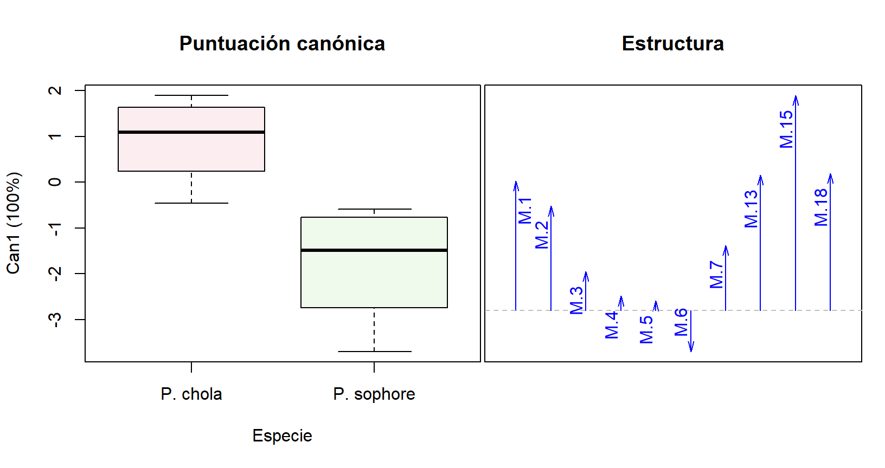
Las cajas casi no se solapan, y aun así la prueba no es significativa (p = 0.386, la misma T² de arriba). Con 18 peces y 10 medidas, la función canónica se ajusta a los propios datos: la separación que se ve es optimista, y por eso la validación cruzada de la Parte 2 confunde a estas dos especies. Con pocos individuos por grupo, el CDA se lee junto con su prueba y con la validación cruzada, nunca solo por la figura.
Paso 3 · PERMANOVA
La PERMANOVA (Anderson, 2001) hace la ANOVA directamente sobre una matriz de distancias: la suma de cuadrados total es la suma de las distancias al cuadrado entre todos los pares dividida por N, y la de dentro de grupos, la misma suma dentro de cada grupo dividida por su tamaño (diap. 18). El valor p sale de reasignar los rótulos al azar.
Código
# Distancia euclídea sobre las 10 razones (ya comparten escala)
d_peces <- dist(peces10)
# PERMANOVA por especie (999 permutaciones)
set.seed(2026)
perm_p <- adonis2(d_peces ~ Especie, # la respuesta es la matriz de distancias
data = peces,
permutations = 999)
perm_pPermutation test for adonis under reduced model
Permutation: free
Number of permutations: 999
adonis2(formula = d_peces ~ Especie, data = peces, permutations = 999)
Df SumOfSqs R2 F Pr(>F)
Model 4 2.19089 0.70369 38.591 0.001 ***
Residual 65 0.92255 0.29631
Total 69 3.11344 1.00000
---
Signif. codes: 0 '***' 0.001 '**' 0.01 '*' 0.05 '.' 0.1 ' ' 1La especie explica el 70.4 % de la variación morfométrica (R² = 0.704; pseudo-F = 38.59 con 4 y 65 gl; p = 0.001).
NotaLectura en casa · La pseudo-F a mano
Código
# La pseudo-F a mano, con la partición de la diap. 18
D2 <- as.matrix(d_peces)^2 # distancias al cuadrado
N <- nrow(D2)
g <- nlevels(peces$Especie)
SC_tot <- sum(D2[upper.tri(D2)]) / N # suma de cuadrados total
SC_den <- sum(map_dbl(levels(peces$Especie), function(e) {
i <- peces$Especie == e
sum(D2[i, i][upper.tri(D2[i, i])]) / sum(i) # dentro de cada especie
}))
F_mano <- ((SC_tot - SC_den) / (g - 1)) / (SC_den / (N - g))
c(SC_total = SC_tot,
SC_dentro = SC_den,
pseudo_F = F_mano) SC_total SC_dentro pseudo_F
3.113441 0.922550 38.590847 Código
# Con una sola variable y distancia euclídea, la PERMANOVA es la ANOVA clásica
set.seed(2026)
c(F_permanova = adonis2(dist(peces$M.1) ~ Especie,
data = peces,
permutations = 99)$F[1],
F_anova = anova(lm(M.1 ~ Especie, data = peces))$`F value`[1])F_permanova F_anova
127.3568 127.3568 La cuenta a mano da la misma pseudo-F: no hay nada oculto en adonis2(). Con una sola variable y distancia euclídea, la PERMANOVA da la misma F que la ANOVA clásica.
Nota¿Por qué no se estandarizan las medidas?
Las 10 columnas son razones adimensionales sobre la longitud estándar o de la cabeza, así que la distancia euclídea sobre ellas ya es comparable entre medidas. Estandarizar (dist(scale(peces10))) daría el mismo peso a una razón que casi no varía que a una que varía mucho; sería la opción si las medidas estuvieran en milímetros o en unidades distintas, como la fisicoquímica de la Parte 1.
Paso 4 · betadisper: ¿localización o dispersión?
Una PERMANOVA significativa puede deberse a que los centroides están en sitios distintos (localización), a que unos grupos están más dispersos que otros (dispersión) o a ambas cosas, sobre todo con grupos de tamaño distinto (Anderson, 2006). betadisper() calcula la distancia de cada individuo al centroide de su grupo y hace una ANOVA por permutación sobre esas distancias (diap. 19):
Código
# Distancias al centroide por especie y prueba con comparaciones pareadas
bd_p <- betadisper(d_peces,
peces$Especie) # distancia de cada pez al centroide de su especie
set.seed(2026)
pt_bd_p <- permutest(bd_p,
permutations = 999,
pairwise = TRUE) # también por pares
pt_bd_p$tab Df Sum Sq Mean Sq F N.Perm Pr(>F)
Groups 4 0.01980361 0.004950903 3.28102 999 0.021
Residuals 65 0.09808190 0.001508952 NA NA NACódigo
# Distancia media al centroide por especie
disp_esp <- tapply(bd_p$distances, peces$Especie, mean)
round(disp_esp, 3) P. chola P. conchonius P. sophore P. ticto S. sarana
0.085 0.123 0.122 0.126 0.096 Código
# Pares con p < 0.05 (p por permutación)
pp_bd <- pt_bd_p$pairwise$permuted
pp_bd[pp_bd < 0.05]P. chola-P. conchonius P. chola-P. sophore P. chola-P. ticto
0.003 0.030 0.008
P. ticto-S. sarana
0.025 La dispersión difiere entre especies (F = 3.28; p = 0.021). P. chola es la más compacta (0.085), frente a 0.122–0.126 de P. conchonius, P. sophore y P. ticto. Los pares que difieren en dispersión (p < 0.05) son P. chola – P. conchonius; P. chola – P. sophore; P. chola – P. ticto; P. ticto – S. sarana.
| betadisper no significativo | betadisper significativo | |
|---|---|---|
| PERMANOVA significativa | Diferencia de localización: se interpreta | Localización, dispersión o ambas: se reportan las dos y se mira la ordenación |
| PERMANOVA no significativa | Sin evidencia de diferencias | Los grupos difieren en heterogeneidad: un resultado ecológico en sí mismo |
Aquí se está en la celda de arriba a la derecha. La ordenación de la Parte 2 ayuda: S. sarana no se solapa con ninguna Puntius, así que su diferencia es de localización; entre las Puntius, parte del R² puede venir de la dispersión.
Paso 5 · Comparaciones pareadas
Código
# PERMANOVA por pares de especies
pares <- combn(levels(peces$Especie), 2,
simplify = FALSE) # los 10 pares posibles
pares_p <- map_dfr(pares, function(par) {
sub <- peces %>%
filter(Especie %in% par) %>%
mutate(Especie = droplevels(Especie))
set.seed(2026)
a <- adonis2(dist(select(sub, all_of(vars_p))) ~ Especie,
data = sub,
permutations = 999)
tibble(Par = paste(par, collapse = " – "),
R2 = a$R2[1],
pseudo_F = a$F[1],
p = p_de(a))
}) %>%
mutate(p_Holm = p.adjust(p, method = "holm")) # ajuste por 10 pruebas
pares_p %>%
tabla(digits = c(0, 3, 2, 3, 3)) %>%
row_spec(which.max(pares_p$p_Holm),
background = "#FDEBD0") # resalta el par más débil| Par | R2 | pseudo_F | p | p_Holm |
|---|---|---|---|---|
| P. chola – P. conchonius | 0.377 | 10.90 | 0.001 | 0.010 |
| P. chola – P. sophore | 0.117 | 2.12 | 0.045 | 0.045 |
| P. chola – P. ticto | 0.312 | 13.61 | 0.001 | 0.010 |
| P. chola – S. sarana | 0.673 | 70.09 | 0.001 | 0.010 |
| P. conchonius – P. sophore | 0.219 | 3.37 | 0.012 | 0.024 |
| P. conchonius – P. ticto | 0.321 | 12.28 | 0.001 | 0.010 |
| P. conchonius – S. sarana | 0.641 | 53.52 | 0.001 | 0.010 |
| P. sophore – P. ticto | 0.260 | 8.45 | 0.001 | 0.010 |
| P. sophore – S. sarana | 0.529 | 31.43 | 0.001 | 0.010 |
| P. ticto – S. sarana | 0.729 | 112.81 | 0.001 | 0.010 |
Código
p_cs <- pares_p %>%
filter(Par == "P. chola – P. sophore")Los 10 pares difieren después del ajuste de Holm. El más débil es P. chola – P. sophore (R² = 0.117; p ajustado = 0.045): la PERMANOVA detecta una diferencia que la T² de Hotelling con 10 medidas no veía, porque no necesita invertir matrices de covarianza.
TipCómo reportar el resultado
La morfometría (10 razones sobre la longitud estándar o de la cabeza) difirió entre las cinco especies (PERMANOVA con distancia euclídea: pseudo-F = 38,59; gl = 4 y 65; R² = 0,704; p = 0,001; 999 permutaciones). La dispersión multivariada también difirió (betadisper: F = 3,28; p = 0,021), por la menor variabilidad de P. chola, de modo que parte de la diferencia entre las especies de Puntius puede deberse a la dispersión. Todos los pares de especies difirieron (PERMANOVA por pares con ajuste de Holm, p ≤ 0,045). La MANOVA llegó a la misma conclusión (traza de Pillai = 2,513; p < 0,001), pero no se usó para inferir porque los residuos no fueron normales (Shapiro-Wilk multivariado: W = 0,839; p < 0,001) ni las covarianzas homogéneas.
El párrafo nombra la distancia, el número de permutaciones, el R² junto al pseudo-F, el resultado de betadisper y por qué se eligió la PERMANOVA sobre la MANOVA.
Para discutir: en un muestreo de bentos de fondos blandos con tres niveles de perturbación, la PERMANOVA da p = 0.002 y betadisper p = 0.001, y el nivel más perturbado es el más disperso. ¿Qué se escribiría en la discusión? ¿Es eso un problema del análisis o un resultado?
Parte 4 — PERMANOVA con bloques: los tributarios del río Gaira
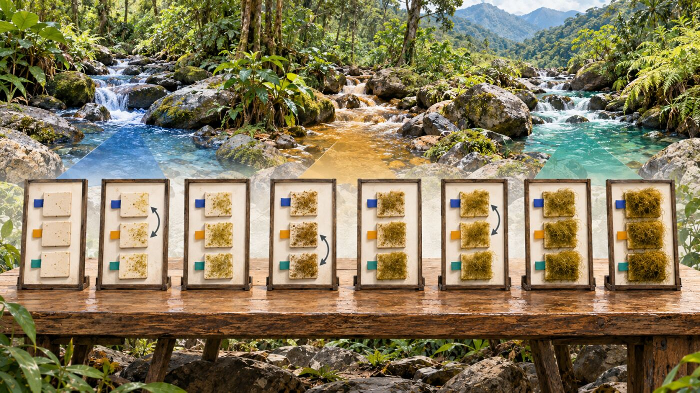
Pregunta: ¿Difiere la composición de microalgas entre tributarios cuando la visita se trata como bloque?
Las matrices de los Talleres 7 a 9
Código
# Matrices F y Y de microalgas (igual que en los Talleres 7 a 9)
alg <- read_excel("Microalgas.xlsx",
sheet = "Microalgas") %>%
rename(Fragilaria = Fragillaria, # nombres de géneros corregidos
Nitzschia = Nitzchia,
Surirella = Surilella,
Gyrosigma = Girosigma,
Achnanthes = Achnantes) %>%
mutate(Tributario = factor(Tributario),
Visita = factor(as.integer(sub(".*\\.", "", Cod)))) # T1.3 → 3
F_alg <- alg %>%
select(Cod, Tributario, Visita) # factores
Y_alg <- alg %>%
select(Fragilaria:Pinnularia) # comunidad
# Bray-Curtis con la transformación del NMDS del Taller 8 (raíz cuadrada y Wisconsin)
d_bray <- Y_alg %>%
sqrt() %>%
wisconsin() %>%
vegdist(method = "bray")
table(F_alg$Tributario, F_alg$Visita)
1 2 3 4 5 6 7 8
T1 1 1 1 1 1 1 1 1
T2 1 1 1 1 1 1 1 1
T3 1 1 1 1 1 1 1 1Cada visita reúne una muestra de cada tributario, tomadas en la misma semana de colonización: es un diseño de bloques completos al azar (Semana 1), con la visita como bloque. En los Talleres 7 y 8 quedó la advertencia de que las visitas no son intercambiables, y en el Taller 9 la visita absorbió el 44.5 % de la inercia de la RDA parcial. La PERMANOVA cierra esa línea con una matriz de distancias.
Paso 1 · Permutaciones dentro de cada visita
Código
# Los rótulos de tributario solo se intercambian dentro de cada visita
ctrl_vis <- how(nperm = 999,
blocks = F_alg$Visita) # la visita es el bloque
numPerms(F_alg,
control = ctrl_vis) # arreglos posibles[1] 1679616Código
# PERMANOVA por términos: primero el bloque, luego el tributario
set.seed(2026)
perm_alg <- adonis2(d_bray ~ Visita + Tributario,
data = F_alg,
by = "terms", # en el orden de la fórmula
permutations = ctrl_vis)
perm_algPermutation test for adonis under reduced model
Terms added sequentially (first to last)
Blocks: F_alg$Visita
Permutation: free
Number of permutations: 999
adonis2(formula = d_bray ~ Visita + Tributario, data = F_alg, permutations = ctrl_vis, by = "terms")
Df SumOfSqs R2 F Pr(>F)
Visita 7 0.64413 0.47987 3.5144 0.001 ***
Tributario 2 0.33159 0.24703 6.3320 0.001 ***
Residual 14 0.36657 0.27309
Total 23 1.34229 1.00000
---
Signif. codes: 0 '***' 0.001 '**' 0.01 '*' 0.05 '.' 0.1 ' ' 1Con 3 tributarios en cada una de las 8 visitas hay 3!⁸ = 1 679 616 arreglos posibles; adonis2() toma 999 al azar. Dos detalles de la diap. 21: en vegan 2.6 el bloque se declara con how(blocks = …) (el argumento strata está obsoleto), y la visita entra primero en la fórmula para que su variación salga del residuo antes de evaluar el tributario. El p de la visita no se interpreta: con permutaciones dentro de cada visita, la visita no se está probando.
| Término | gl | SC | R² | pseudo-F | p |
|---|---|---|---|---|---|
| Visita (bloque) | 7 | 0.644 | 0.480 | 3.51 | no se interpreta |
| Tributario | 2 | 0.332 | 0.247 | 6.33 | 0.001 |
| Residual | 14 | 0.367 | 0.273 | ||
| Total | 23 | 1.342 | 1.000 |
Paso 2 · ¿Qué cambia sin el bloque?
Código
# El mismo tributario, sin la visita en el modelo y con permutación libre
set.seed(2026)
perm_alg_sv <- adonis2(d_bray ~ Tributario,
data = F_alg,
permutations = 999)
perm_alg_svPermutation test for adonis under reduced model
Permutation: free
Number of permutations: 999
adonis2(formula = d_bray ~ Tributario, data = F_alg, permutations = 999)
Df SumOfSqs R2 F Pr(>F)
Model 2 0.33159 0.24703 3.4448 0.001 ***
Residual 21 1.01070 0.75297
Total 23 1.34229 1.00000
---
Signif. codes: 0 '***' 0.001 '**' 0.01 '*' 0.05 '.' 0.1 ' ' 1El R² del tributario no cambia (0.247): la suma de cuadrados entre tributarios es la misma. Lo que cambia es el denominador. Sin la visita, sus 0.644 unidades de variación quedan en el residuo, que pasa de 14 a 21 gl, y el pseudo-F baja de 6.33 a 3.44. Aquí el tributario se sostiene de cualquier modo (p = 0.001), pero con un efecto más débil el bloque puede ser la diferencia entre detectarlo o no.
Paso 3 · betadisper por tributario y contraste con la RDA
Código
# Dispersión por tributario
bd_alg <- betadisper(d_bray,
F_alg$Tributario)
set.seed(2026)
pt_bd_alg <- permutest(bd_alg,
permutations = 999)
pt_bd_alg$tab Df Sum Sq Mean Sq F N.Perm Pr(>F)
Groups 2 0.004361188 0.002180594 0.1598243 999 0.834
Residuals 21 0.286517645 0.013643697 NA NA NACódigo
disp_trib <- tapply(bd_alg$distances, F_alg$Tributario, mean) # distancia media al centroide
round(disp_trib, 2) T1 T2 T3
0.20 0.17 0.18 Código
# La RDA por tributario del Taller 9 (Hellinger), para comparar
Y_hel <- decostand(Y_alg,
method = "hellinger")
rda_trib <- rda(Y_hel ~ Tributario,
data = F_alg)
R2_trib <- RsquareAdj(rda_trib)
set.seed(2026)
glob_trib <- anova(rda_trib,
permutations = how(nperm = 999))La dispersión no difiere (F = 0.16; p = 0.834; distancia media al centroide: T1 0.20, T2 0.17, T3 0.18). La diferencia entre tributarios es de localización y se interpreta sin reservas.
| Análisis | Matriz | Tributario | Visita |
|---|---|---|---|
| RDA por tributario (Taller 9) | Hellinger | R² = 0.214; R² aj. = 0.139; p = 0.002 | Absorbía el 44.5 % en la RDA parcial |
| PERMANOVA con bloques (este taller) | Bray-Curtis (raíz + Wisconsin) | R² = 0.247; p = 0.001 | Explica el 48.0 % |
Con dos matrices y dos técnicas, la conclusión es la misma: los tributarios difieren en composición y la visita es la mayor fuente de variación.
AdvertenciaDiseño: la advertencia de los Talleres 7 y 8, resuelta
En los Talleres 7 y 8 las 24 muestras se trataron como si fueran independientes, aunque cada visita es una semana compartida por los tres tributarios. La PERMANOVA con how(blocks = F_alg$Visita) respeta esa estructura: el tributario solo se compara dentro de la misma semana, y la sucesión entre semanas sale del residuo. Las visitas siguen siendo semanas consecutivas de un mismo proceso de colonización (no réplicas independientes en el tiempo), pero la prueba ya no las trata como intercambiables. Un diseño con campañas de muestreo (bentos, peces de arrecife, macroinvertebrados en sequía y lluvias) se analiza igual: la campaña como bloque.
TipCómo reportar el resultado
La composición de microalgas perifíticas (Bray-Curtis sobre abundancias con raíz cuadrada y doble estandarización de Wisconsin) difirió entre los tres tributarios (PERMANOVA con la visita como bloque y permutaciones restringidas dentro de cada visita: pseudo-F = 6,33; gl = 2 y 14; R² = 0,247; p = 0,001; 999 permutaciones). La visita explicó el 48,0 % de la variación. La dispersión multivariada no difirió entre tributarios (betadisper: F = 0,16; p = 0,834), de modo que la diferencia es de localización.
Para discutir: en un muestreo de macroinvertebrados del río Cañas en sequía y lluvias, con las mismas 6 estaciones en las dos épocas, ¿cuál sería el bloque? Con 2 épocas por estación, ¿cuántas permutaciones distintas habría y cuál sería el menor p posible?
Parte 5 — De la PERMANOVA al GLM de cada especie: la sobredispersión en la comunidad
Pregunta: ¿Cambia la comunidad de microalgas entre tributarios si cada género se modela con su propia distribución de conteos, y qué géneros cambian?
En el Taller 4 se documentó la sobredispersión de una especie (el pez loro) y se pasó del Poisson a la binomial negativa con MASS::glm.nb(). Con una comunidad, ajustar 21 modelos sueltos y reportar 21 valores p no responde si cambia la comunidad completa. mvabund::manyglm() ajusta el mismo GLM a cada género (cada uno con su propio θ), suma la evidencia de todos y obtiene el valor p remuestreando filas completas, lo que respeta la correlación entre géneros (Wang et al., 2012; Warton et al., 2012). Es la versión basada en modelos de la PERMANOVA de la Parte 4.
NotaInstalación
mvabund se instala una sola vez con install.packages("mvabund"). Si no instala desde CRAN en el computador, se puede ver el código y los resultados en la versión publicada del taller.
Paso 1 · Los conteos y la relación media–varianza
Código
# GLM multivariado (Wang et al., 2012)
library(mvabund)
# Matriz de conteos: 24 sustratos × 21 géneros
Y_mv <- mvabund(Y_alg) # objeto que entiende manyglm()
# Media y varianza de cada género en cada tributario
mv_alg <- Y_alg %>%
mutate(Tributario = F_alg$Tributario) %>%
pivot_longer(-Tributario,
names_to = "Genero",
values_to = "Conteo") %>%
group_by(Tributario, Genero) %>%
summarise(Media = mean(Conteo),
Varianza = var(Conteo),
.groups = "drop") %>%
filter(Media > 0) # géneros presentes en ese tributario
c(casos = nrow(mv_alg),
varianza_mayor = sum(mv_alg$Varianza > mv_alg$Media),
razon_mediana = median(mv_alg$Varianza / mv_alg$Media)) casos varianza_mayor razon_mediana
57.00000 57.00000 10.79121 Código
# Relación media-varianza en escala log
ggplot(mv_alg,
aes(x = Media,
y = Varianza)) +
geom_abline(intercept = 0,
slope = 1,
linetype = 2,
colour = "grey40") + # varianza = media (Poisson)
geom_point(aes(colour = Tributario),
size = 2.2,
alpha = 0.85) +
scale_x_log10() +
scale_y_log10() +
scale_colour_manual(values = col_trib) +
labs(x = "Media (log)",
y = "Varianza (log)") +
theme_bw() +
theme(panel.grid.minor = element_blank())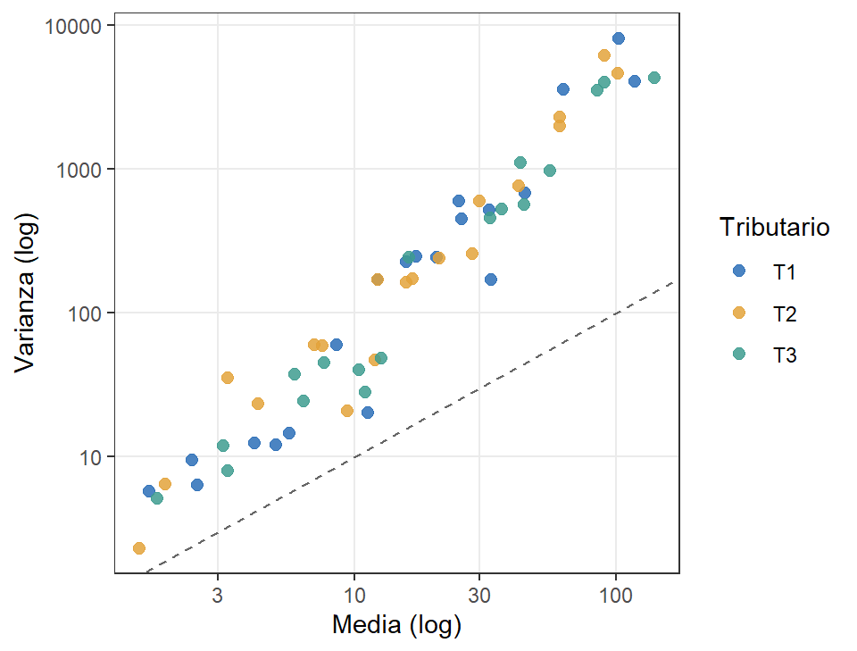
En los 57 casos (género × tributario con presencia), la varianza supera a la media 57 veces, y en la mitad de ellos es más de 10.8 veces la media: la misma señal de agregación del pez loro del Taller 4, ahora en toda la comunidad. Los puntos siguen una pendiente mayor que 1, como espera la binomial negativa (Var = μ + μ²/θ).
Paso 2 · Poisson frente a binomial negativa
Código
# Un GLM por género, con la visita (bloque) y el tributario
m_pois <- manyglm(Y_mv ~ Visita + Tributario,
data = F_alg,
family = "poisson")
m_nb <- manyglm(Y_mv ~ Visita + Tributario,
data = F_alg,
family = "negative.binomial") # un θ por género
# φ de Pearson del Poisson y de la binomial negativa, por género
mu_p <- fitted(m_pois)
mu_nb <- fitted(m_nb)
var_nb <- mu_nb + sweep(mu_nb^2, 2, m_nb$theta, "/") # Var = μ + μ²/θ
phi_alg <- tibble(Genero = colnames(Y_alg),
phi_Poisson = colSums((Y_alg - mu_p)^2 / mu_p) / m_pois$df.residual,
phi_BN = colSums((Y_alg - mu_nb)^2 / var_nb) / m_nb$df.residual)
# Tres evidencias en una tabla
tibble(Evidencia = c("φ de Pearson (mediana)", "φ de Pearson (máximo)", "AIC sumado (21 géneros)"),
Poisson = c(f1(median(phi_alg$phi_Poisson)),
f1(max(phi_alg$phi_Poisson)),
f1(sum(AIC(m_pois)))),
Binomial_negativa = c(f1(median(phi_alg$phi_BN)),
f1(max(phi_alg$phi_BN)),
f1(sum(AIC(m_nb))))) %>%
tabla(col.names = c("Evidencia", "Poisson", "Binomial negativa"))| Evidencia | Poisson | Binomial negativa |
|---|---|---|
| φ de Pearson (mediana) | 4.1 | 1.3 |
| φ de Pearson (máximo) | 18.2 | 2.8 |
| AIC sumado (21 géneros) | 3757.9 | 3150.8 |
Código
# Residuos de Dunn-Smyth de los dos modelos
set.seed(2026) # los residuos de conteos tienen un componente aleatorio
res_ds <- bind_rows(tibble(Modelo = "Poisson",
Ajustado = as.vector(log(fitted(m_pois))),
Residuo = as.vector(residuals(m_pois))),
tibble(Modelo = "Binomial negativa",
Ajustado = as.vector(log(fitted(m_nb))),
Residuo = as.vector(residuals(m_nb)))) %>%
mutate(Modelo = factor(Modelo,
levels = c("Poisson", "Binomial negativa"))) %>%
filter(Ajustado > -5) # sin los géneros ausentes en un grupo
ggplot(res_ds,
aes(x = Ajustado,
y = Residuo)) +
geom_hline(yintercept = 0,
colour = "grey50") +
geom_hline(yintercept = c(-2, 2),
linetype = 3,
colour = "grey50") +
geom_point(size = 1,
alpha = 0.5,
colour = "#2C6FB7") +
facet_wrap(~ Modelo) +
labs(x = "Valor ajustado (log)",
y = "Residuo de Dunn-Smyth") +
theme_bw() +
theme(panel.grid.minor = element_blank())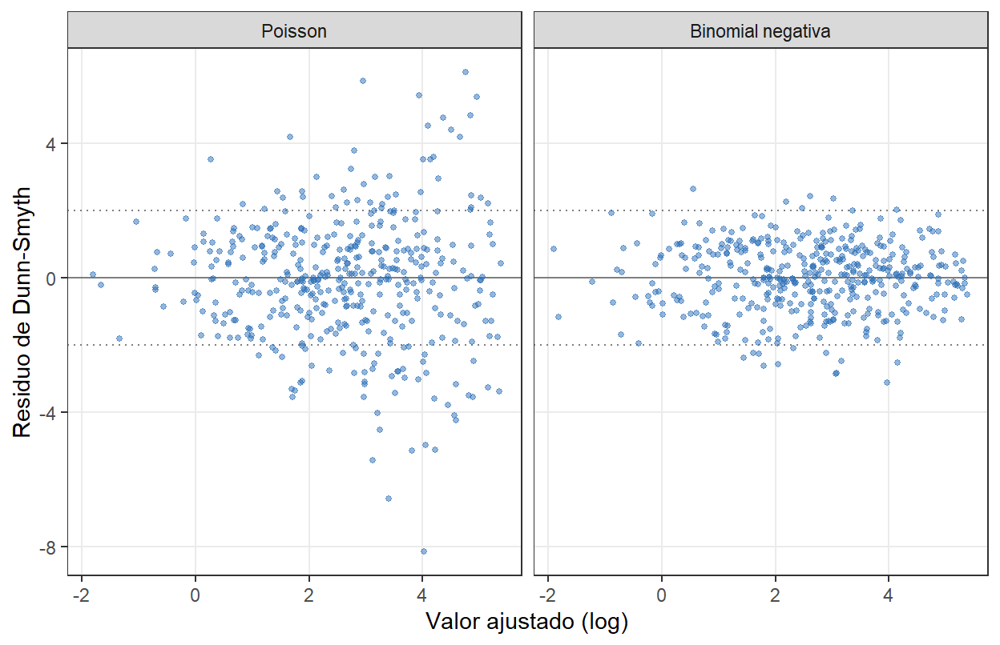
Las tres evidencias apuntan al mismo lado. Con el Poisson, φ tiene una mediana de 4.1 y supera 1.2 en 16 de los 21 géneros; los residuos forman un abanico. La binomial negativa baja la mediana de φ a 1.3 (máximo 2.8, frente a 18.2), deja los residuos sin patrón y reduce el AIC sumado de 3757.9 a 3150.8. En los pocos géneros sin sobredispersión, θ resulta muy grande y la binomial negativa se reduce a la Poisson, así que no se pierde nada al usarla para todos.
Paso 3 · Prueba de la comunidad con razón de verosimilitud
Código
# Prueba por términos con razón de verosimilitud (LR) y p por género ajustado
set.seed(2026)
an_nb <- anova(m_nb,
nBoot = 999, # remuestreos PIT-trap de filas completas
p.uni = "adjusted", # p por género, ajustado por multiplicidad
show.time = "none")
an_nb$table Res.Df Df.diff Dev Pr(>Dev)
(Intercept) 23 NA NA NA
Visita 16 7 524.1446 0.001
Tributario 14 2 322.1235 0.001Código
# Géneros que cambian entre tributarios
gen_trib <- tibble(Genero = colnames(Y_alg),
LR = an_nb$uni.test["Tributario", ],
p_ajustado = an_nb$uni.p["Tributario", ]) %>%
arrange(p_ajustado)
gen_trib %>%
filter(p_ajustado < 0.05) %>%
tabla(col.names = c("Género", "LR (tributario)", "p ajustado"))| Género | LR (tributario) | p ajustado |
|---|---|---|
| Lyngbya | 37.902 | 0.001 |
| Eunotia | 30.584 | 0.001 |
| Gyrosigma | 28.596 | 0.001 |
| Surirella | 40.563 | 0.001 |
| Cymbella | 25.396 | 0.007 |
| Closterium | 20.528 | 0.030 |
| Amphora | 19.264 | 0.035 |
| Navicula | 19.399 | 0.035 |
Código
# ¿En qué tributarios aparecen los géneros que cambian?
Y_alg %>%
select(all_of(gen_trib$Genero[gen_trib$p_ajustado < 0.05])) %>%
mutate(Tributario = F_alg$Tributario) %>%
group_by(Tributario) %>%
summarise(across(everything(), sum)) %>% # total por tributario
tabla(digits = 0)| Tributario | Lyngbya | Eunotia | Gyrosigma | Surirella | Cymbella | Closterium | Amphora | Navicula |
|---|---|---|---|---|---|---|---|---|
| T1 | 201 | 33 | 68 | 126 | 0 | 45 | 40 | 165 |
| T2 | 98 | 34 | 12 | 60 | 0 | 0 | 96 | 168 |
| T3 | 0 | 0 | 14 | 0 | 25 | 61 | 101 | 293 |
La comunidad cambia entre tributarios (Dev = 322.1; p = 0.001), la misma conclusión de la PERMANOVA de la Parte 4 (R² = 0.247). Lo nuevo es la respuesta por género: 8 de los 21 géneros cambian con p ajustado < 0.05, y los que más cambian son los que faltan en algún tributario (Lyngbya, Surirella y Eunotia no aparecen en T3; Cymbella solo aparece en T3).
Importante
anova() y no summary()
summary() de manyglm usa por defecto la prueba de Wald, que falla justo cuando un género está ausente en todas las muestras de un grupo: su estimado tiende a −∞ y su error estándar también crece. En estos datos, Lyngbya (ausente en T3) está entre los géneros con mayor estadístico de razón de verosimilitud, pero su Wald para T3 es casi cero (ver el material complementario). anova() usa la razón de verosimilitud por defecto y es la prueba que se reporta.
AdvertenciaDiseño: la visita va en el modelo, no en
block =
anova.manyglm() tiene un argumento block que remuestrea visitas completas. Sirve para un factor asignado a la visita (como la zona del plancton, asignada a la estación), no para el tributario, que varía dentro de cada visita. Aquí la visita se controla en el modelo (Y ~ Visita + Tributario), igual que en la PERMANOVA de la Parte 4. El material complementario muestra cuánto cambia el p si se usa block = Visita por error.
TipCómo reportar el resultado
La abundancia (conteos por sustrato) de los 21 géneros de microalgas se analizó con un GLM multivariado (
mvabund::manyglm()), con la visita y el tributario como predictores. Los conteos presentaron sobredispersión: la varianza superó a la media en 57 de 57 combinaciones de género y tributario, el φ de Pearson del modelo Poisson tuvo una mediana de 4,1 y los residuos de Dunn-Smyth formaron un abanico; por ello se usó la binomial negativa, que redujo el AIC sumado de 3758 a 3151 y dejó los residuos sin patrón. La composición difirió entre tributarios (razón de verosimilitud: Dev = 322,1; p = 0,001; 999 remuestreos PIT-trap), y 8 géneros cambiaron con p ajustado por multiplicidad < 0,05.
El párrafo nombra la variable respuesta, las tres evidencias de la sobredispersión, el modelo que se reporta (solo la binomial negativa), la prueba (razón de verosimilitud, no Wald) y el remuestreo.
Para discutir: un manuscrito reporta, para 25 especies de fitoplancton, una tabla con los valores de Wald del Poisson y de la binomial negativa lado a lado, y un SIMPER para decir qué especies separan las épocas. ¿Qué le pediría un evaluador? (Diapositiva «Cómo lee un evaluador la sección de GLM».)
Lista de verificación antes de reportar un CLA, una LDA o una prueba multivariada
- ¿Se justificaron la distancia y la transformación (euclídea estandarizada, euclídea sobre medidas comparables, Bray-Curtis para abundancias)?
- CLA: ¿se reportó el método de unión, la correlación cofenética y el criterio para elegir k (silueta)? ¿Se evitó probar después los grupos del CLA con los mismos datos?
- LDA: ¿se informó el porcentaje de clasificación correcta con validación cruzada, y no solo con resustitución? ¿Hay bastantes más individuos por grupo que variables?
- ¿Se identificó la unidad de muestreo y se descartó la seudorreplicación (filas repetidas, varias filas de la misma unidad), sin recurrir a Durbin-Watson en datos sin orden?
- MANOVA: ¿se revisaron la normalidad multivariada y la homogeneidad de covarianzas, y se reportó Pillai?
- PERMANOVA: ¿se reportaron la distancia, el número de permutaciones, el R² y el pseudo-F con sus gl?
- ¿Se corrió
betadisper()y se leyó junto con la PERMANOVA (localización frente a dispersión)? - ¿Las comparaciones pareadas se ajustaron por pruebas múltiples (Holm)?
- ¿Se declararon en las permutaciones los bloques (
how(blocks = …)) y las unidades de muestreo (Plots()) del diseño, y se revisó connumPerms()cuántas permutaciones existen? - Con conteos de muchas especies: ¿se documentó la sobredispersión (media–varianza, φ, residuos, AIC), se reportó solo la binomial negativa y se probó con
anova()(razón de verosimilitud), con los bloques en el modelo?
Estudio de caso — ¿Difiere la comunidad del mesozooplancton entre zonas del golfo de Urabá?
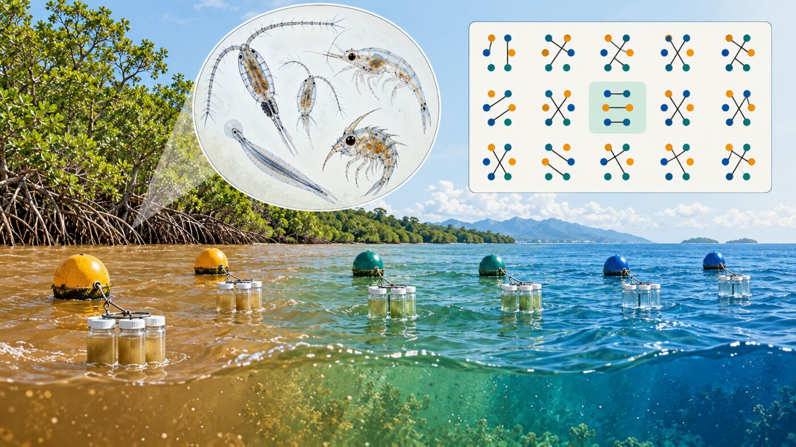
La serie del plancton llega a su prueba formal. En el Taller 7, la salinidad separó el ambiente de las zonas fluvial, estuarina y marina; en el Taller 8, el NMDS sugirió que la comunidad separa el río del resto y planteó la pseudorreplicación por estación; en el Taller 9, la zona dejó de ser significativa en la RDA al permutar estaciones completas. Ahora la pregunta es la de una PERMANOVA: ¿difiere la composición del mesozooplancton entre zonas, entre mallas y entre capas, y a qué nivel se prueba cada factor? Se usa la misma Bray-Curtis del NMDS del Taller 8 en las 24 muestras (6 estaciones × 2 mallas × 2 capas).
Antes de correr el código, se responde por escrito:
- La zona se asignó a la estación, y hay 2 estaciones por zona. Si se permutan estaciones completas, ¿cuántas permutaciones hay? ¿Cuántas de ellas dan una partición distinta de las estaciones en tres pares?
- Con esa cuenta, ¿cuál es el menor p que podría dar la zona?
- La malla y la capa varían dentro de cada estación. ¿Qué restricción de las permutaciones les corresponde?
- En el Taller 8, la zona fluvial se veía más dispersa en el NMDS. ¿Qué técnica lo prueba, y qué le pasaría a la lectura de la PERMANOVA si fuera significativa?
- La salinidad varía entre las muestras de una misma estación (capas superficial y profunda). ¿Se espera que su efecto sobreviva a la permutación de estaciones completas, como en el Taller 9?
Paso 1 · Base ancha del plancton y Bray-Curtis del Taller 8
Código
# Hoja «Riqueza» depurada y base ancha (igual que en la Parte 3 del Taller 5)
biol <- read_xlsx("plancton.xlsx",
sheet = "Riqueza") %>%
mutate(Groups = str_trim(Groups), # quita espacios sobrantes
Station = factor(Station),
Size = factor(Size),
Layers = recode_factor(Layers,
Depth = "Profunda",
Surface = "Superficial"))
taxones <- unique(biol$Groups)
# Ambiente promedio por muestra (estación × malla × capa)
amb <- biol %>%
group_by(Station, Size, Layers) %>%
summarise(across(c(Temperature, Salinity, Density), mean),
.groups = "drop")
# Abundancia por grupo y muestra, en formato ancho
tax <- biol %>%
group_by(Station, Size, Layers, Groups) %>%
summarise(Abundance = sum(Abundance),
.groups = "drop") %>%
pivot_wider(names_from = Groups,
values_from = Abundance,
values_fill = 0) # grupo ausente = 0
# Zona de cada estación
zonas <- tibble(Station = factor(c(2, 4, 7, 9, 13, 15)),
Zona = factor(rep(c("Fluvial", "Estuarina", "Marina"), each = 2),
levels = c("Fluvial", "Estuarina", "Marina")))
pl_ancho <- amb %>%
left_join(tax, by = c("Station", "Size", "Layers")) %>%
mutate(Ab = rowSums(across(all_of(taxones)))) %>% # total de organismos
left_join(zonas, by = "Station")
# Bray-Curtis con la autotransformación que aplicó metaMDS() en el Taller 8
Y_pl <- pl_ancho %>%
select(all_of(taxones))
d_pl <- Y_pl %>%
sqrt() %>%
wisconsin() %>%
vegdist(method = "bray")
count(pl_ancho, Zona, Station)# A tibble: 6 × 3
Zona Station n
<fct> <fct> <int>
1 Fluvial 2 4
2 Fluvial 4 4
3 Estuarina 7 4
4 Estuarina 9 4
5 Marina 13 4
6 Marina 15 4Paso 2 · La zona con permutación libre
Código
# PERMANOVA de la zona, permutando las 24 muestras al azar
set.seed(2026)
perm_pl <- adonis2(d_pl ~ Zona,
data = pl_ancho,
permutations = 999) # permutación libre
perm_plPermutation test for adonis under reduced model
Permutation: free
Number of permutations: 999
adonis2(formula = d_pl ~ Zona, data = pl_ancho, permutations = 999)
Df SumOfSqs R2 F Pr(>F)
Model 2 0.9963 0.26664 3.8177 0.001 ***
Residual 21 2.7402 0.73336
Total 23 3.7364 1.00000
---
Signif. codes: 0 '***' 0.001 '**' 0.01 '*' 0.05 '.' 0.1 ' ' 1Paso 3 · La zona permutando estaciones completas
Código
# Las 4 muestras de cada estación se mueven juntas; dentro de la estación no se permuta
ctrl_est <- how(nperm = 999,
within = Within(type = "none"), # nada dentro de la estación
plots = Plots(strata = pl_ancho$Station, type = "free")) # estaciones completas
numPerms(pl_ancho,
control = ctrl_est)[1] 720Código
perm_pl_est <- adonis2(d_pl ~ Zona,
data = pl_ancho,
permutations = ctrl_est)
perm_pl_estPermutation test for adonis under reduced model
Plots: pl_ancho$Station, plot permutation: free
Permutation: none
Number of permutations: 719
adonis2(formula = d_pl ~ Zona, data = pl_ancho, permutations = ctrl_est)
Df SumOfSqs R2 F Pr(>F)
Model 2 0.9963 0.26664 3.8177 0.2
Residual 21 2.7402 0.73336
Total 23 3.7364 1.00000 Código
# Particiones distintas de 6 estaciones en tres pares sin rótulo
n_part <- factorial(6) / (factorial(2)^3 * factorial(3))
c(particiones = n_part,
p_minimo = 1 / n_part)particiones p_minimo
15.00000000 0.06666667 Paso 4 · Malla y capa dentro de cada estación
Código
# Los rótulos de malla y capa se permutan solo dentro de cada estación
ctrl_dentro <- how(nperm = 999,
blocks = pl_ancho$Station) # la estación es el bloque
set.seed(2026)
perm_pl_met <- adonis2(d_pl ~ Station + Size * Layers,
data = pl_ancho,
by = "terms",
permutations = ctrl_dentro)
perm_pl_metPermutation test for adonis under reduced model
Terms added sequentially (first to last)
Blocks: pl_ancho$Station
Permutation: free
Number of permutations: 999
adonis2(formula = d_pl ~ Station + Size * Layers, data = pl_ancho, permutations = ctrl_dentro, by = "terms")
Df SumOfSqs R2 F Pr(>F)
Station 5 1.3510 0.36157 2.7843 0.001 ***
Size 1 0.4809 0.12871 4.9556 0.001 ***
Layers 1 0.2884 0.07718 2.9716 0.009 **
Size:Layers 1 0.1606 0.04297 1.6545 0.110
Residual 15 1.4556 0.38958
Total 23 3.7364 1.00000
---
Signif. codes: 0 '***' 0.001 '**' 0.01 '*' 0.05 '.' 0.1 ' ' 1Paso 5 · Dispersión por zona y efecto de la salinidad
Código
# betadisper por zona
bd_pl <- betadisper(d_pl,
pl_ancho$Zona)
set.seed(2026)
pt_bd_pl <- permutest(bd_pl,
permutations = 999)
pt_bd_pl$tab Df Sum Sq Mean Sq F N.Perm Pr(>F)
Groups 2 0.04166732 0.02083366 1.727786 999 0.199
Residuals 21 0.25321817 0.01205801 NA NA NACódigo
disp_zona <- tapply(bd_pl$distances, pl_ancho$Zona, mean)
round(disp_zona, 2) Fluvial Estuarina Marina
0.38 0.29 0.30 Código
# La salinidad como variable continua: permutación libre y por estaciones completas
set.seed(2026)
perm_sal <- adonis2(d_pl ~ Salinity,
data = pl_ancho,
permutations = 999)
perm_sal_est <- adonis2(d_pl ~ Salinity,
data = pl_ancho,
permutations = ctrl_est)
c(R2 = perm_sal$R2[1],
p_libre = p_de(perm_sal),
p_estaciones = p_de(perm_sal_est)) R2 p_libre p_estaciones
0.196306800 0.002000000 0.006944444
NotaVerificación (desplegar después de responder)
- Con 6 estaciones hay 6! = 720 permutaciones de estaciones completas, que
adonis2()enumera todas. Pero la pseudo-F solo depende de qué estaciones quedan juntas, no de cómo se llama cada zona ni del orden dentro de cada par: hay 15 particiones distintas, y cada una se repite 48 veces. - El menor p posible es 1/15 = 0.067, mayor que 0.05. Con 2 estaciones por zona, la zona nunca podría ser significativa al 5 %, por fuerte que fuera su efecto. Con permutación libre, la zona explica el 26.7 % (pseudo-F = 3.82; p = 0.001); permutando estaciones, el mismo pseudo-F da p = 0.200: la partición observada está entre las 3 más extremas de las 15. Es la conclusión de la RDA del Taller 9, ahora con la cuenta que la explica.
- Permutaciones dentro de cada estación (
how(blocks = Station)), con la estación en el modelo antes que la malla y la capa. La malla explica el 12.9 % (p = 0.001), la capa el 7.7 % (p = 0.009) y su interacción no se sostiene (p = 0.110). Los factores del método de muestreo sí se pueden probar, porque tienen réplicas dentro de cada estación; conwithin = Within(type = "none")no se podrían. - Con
betadisper(). La zona fluvial es la más dispersa (0.38 frente a 0.29 y 0.30), pero la diferencia no es significativa (F = 1.73; p = 0.199). Con solo 2 estaciones por zona, esa prueba también es débil. - Sí. La salinidad explica el 19.6 % de la composición y se sostiene tanto con permutación libre (p = 0.002) como permutando estaciones (p = 0.007), porque su gradiente no coincide con una partición de las estaciones en grupos y varía entre capas de una misma estación.
Lección para el estudio de caso: antes de probar un factor, se pregunta a qué nivel se asignó (muestra, estación, zona), se permuta a ese nivel y se cuenta con numPerms() cuántas permutaciones distintas existen. Si el menor p posible supera 0.05, el problema no es de análisis: el diseño necesita más unidades de ese nivel.
Cierre — Una base para el futuro proyecto de grado
Actividad en clase (10 minutos, sin código)
En parejas, se responde sobre el proyecto de grado de cada integrante (presentación 10, diap. 25):
- ¿Qué grupos a priori tiene el diseño (tratamientos, zonas, temporadas, especies)? ¿Hay alguna pregunta que se responda mejor buscando grupos (CLA) que probándolos?
- ¿MANOVA o PERMANOVA, y por qué? Piensen en el tipo de variables, los ceros y el tamaño de cada grupo frente al número de variables.
- ¿Qué bloque o unidad de muestreo habría que declarar en las permutaciones, y cuántas permutaciones distintas permitiría el diseño?
Antes del documento final (tarea corta)
Con la base del estudio de caso del grupo:
- Se elige la técnica con la tabla de la diap. 23 y se justifican la distancia y la transformación (Fundamentos).
- Si hay grupos a priori, se corre la PERMANOVA con
betadisper()y, si corresponde, las comparaciones pareadas con Holm (Parte 3); si el diseño tiene bloques o unidades anidadas, se declaran enhow()y se revisanumPerms()(Parte 4 y estudio de caso). - Se escribe un párrafo como los de «Cómo reportar el resultado», revisando la lista de verificación.
Este material alimenta la sección de análisis multivariado del documento final del estudio de caso (rúbrica R5: al menos una ordenación y una clasificación o prueba multivariada; la PERMANOVA con betadisper y comparaciones pareadas es una de las rutas del nivel avanzado). En la sustentación (rúbrica R6), las preguntas de tipo B suelen ser de este taller: ¿qué pasaría con la conclusión si betadisper fuera significativo? ¿Y si se permutara sin respetar el bloque?
Material de apoyo

Para repasar y profundizar después de la sesión:
- Cuestionario 1 · Clasificación y pruebas multivariadas — 12 preguntas de opción múltiple con pista y explicación, basadas en las Partes 1 a 4 y en el estudio de caso. Práctica sin nota.
- Material complementario · Clasificación y pruebas multivariadas — los siete métodos de agrupamiento, k-means y CLA de peces, mapa de calor de promedios por especie, LDA con conjuntos de entrenamiento y prueba, ANOSIM y MRPP, ANOVA univariadas después de la MANOVA, y
manyglmen detalle (Wald frente a razón de verosimilitud,block =, SIMPER frente ap.uni = "adjusted"y esfuerzo de muestreo).
Referencias
Aguirre, S. E., Piraneque, N. V., & Rodríguez Barrios, J. (2015). Relationship between the nutritional status of banana plants and black sigatoka severity in the Magdalena region of Colombia. Agronomía Colombiana, 33(3), 348–355. http://www.revistas.unal.edu.co/index.php/agrocol/article/view/51900
Anderson, M. J. (2001). A new method for non-parametric multivariate analysis of variance. Austral Ecology, 26(1), 32–46. https://doi.org/10.1111/j.1442-9993.2001.01070.pp.x
Anderson, M. J. (2006). Distance-based tests for homogeneity of multivariate dispersions. Biometrics, 62(1), 245–253. https://doi.org/10.1111/j.1541-0420.2005.00440.x
Anderson, M. J., & Walsh, D. C. I. (2013). PERMANOVA, ANOSIM, and the Mantel test in the face of heterogeneous dispersions: What null hypothesis are you testing? Ecological Monographs, 83(4), 557–574. https://doi.org/10.1890/12-2010.1
Borcard, D., Gillet, F., & Legendre, P. (2018). Numerical Ecology with R (2nd ed.). Springer. https://doi.org/10.1007/978-3-319-71404-2
Box, G. E. P. (1949). A general distribution theory for a class of likelihood criteria. Biometrika, 36(3/4), 317–346. https://doi.org/10.2307/2332671
Dunn, P. K., & Smyth, G. K. (1996). Randomized quantile residuals. Journal of Computational and Graphical Statistics, 5(3), 236–244. https://doi.org/10.1080/10618600.1996.10474708
Friendly, M., & Fox, J. (2026). candisc: Visualizing generalized canonical discriminant and canonical correlation analysis (versión 1.1.1) [Paquete de R]. https://CRAN.R-project.org/package=candisc
Gupta, D., Dwivedi, A. K., & Tripathi, M. (2018). Taxonomic validation of five fish species of subfamily Barbinae from the Ganga river system of northern India using traditional and truss analyses. PLoS ONE, 13(10), e0206031. https://doi.org/10.1371/journal.pone.0206031 — Base de datos
datos.xlsx.Hurlbert, S. H. (1984). Pseudoreplication and the design of ecological field experiments. Ecological Monographs, 54(2), 187–211. https://doi.org/10.2307/1942661
Legendre, P., & Legendre, L. (2012). Numerical Ecology (3rd ed.). Elsevier.
Oksanen, J., Simpson, G. L., Blanchet, F. G., Kindt, R., Legendre, P., Minchin, P. R., et al. (2025). vegan: Community Ecology Package. https://CRAN.R-project.org/package=vegan
Osorio Ávila, F. J., Rodríguez Barrios, J., & Montoya Moreno, Y. (2015). Sucesión de microalgas perifíticas en tributarios del río Gaira, Sierra Nevada de Santa Marta-Colombia. Acta Biológica Colombiana, 20(2), 119–131. https://doi.org/10.15446/abc.v20n2.41932 — Base de datos
Microalgas.Rodríguez-Barrios, J. (2023). Análisis de datos ecológicos y ambientales: aplicaciones con el programa R. Díaz de Santos. — Base de datos
FQmarino.csv.Rousseeuw, P. J. (1987). Silhouettes: a graphical aid to the interpretation and validation of cluster analysis. Journal of Computational and Applied Mathematics, 20, 53–65. https://doi.org/10.1016/0377-0427(87)90125-7
Sokal, R. R., & Rohlf, F. J. (1962). The comparison of dendrograms by objective methods. Taxon, 11(2), 33–40. https://doi.org/10.2307/1217208
Vargas-Ospina, B., Córdoba-Bejarano, J. A., Riquelme-Bugueño, R., Flórez-Leiva, L., & Rodríguez-Barrios, J. (2025). Short-term variations of mesozooplankton in a tropical estuary, Caribbean Colombia. Wetlands, 45, 83. https://doi.org/10.1007/s13157-025-01951-7 — Base de datos
plancton.xlsx.Venables, W. N., & Ripley, B. D. (2002). Modern Applied Statistics with S (4th ed.). Springer. — Paquete
MASS.Wang, Y., Naumann, U., Wright, S. T., & Warton, D. I. (2012). mvabund – an R package for model-based analysis of multivariate abundance data. Methods in Ecology and Evolution, 3(3), 471–474. https://doi.org/10.1111/j.2041-210X.2012.00190.x
Warton, D. I., Wright, S. T., & Wang, Y. (2012). Distance-based multivariate analyses confound location and dispersion effects. Methods in Ecology and Evolution, 3(1), 89–101. https://doi.org/10.1111/j.2041-210X.2011.00127.x
Warton, D. I., Thibaut, L., & Wang, Y. A. (2017). The PIT-trap—A “model-free” bootstrap procedure for inference about regression models with discrete, multivariate responses. PLoS ONE, 12(7), e0181790. https://doi.org/10.1371/journal.pone.0181790
Nota
Las figuras y el código de este taller son de elaboración propia a partir de las bases citadas. Las funciones shapiro_mv() y box_m() se escribieron para el taller siguiendo las definiciones de las pruebas, porque los paquetes que las traen no están disponibles en todas las instalaciones. No reproducen ejercicios ni código de las fuentes bibliográficas.